The program’s citation is the one the app itself gives, ready to copy, in the How to cite section of its home page. It does not have a digital object identifier (DOI) yet: one will be added to both citations when the program is published.
PalynoPro runs entirely inside your browser. The micrographs, their text files and the indexes you open are read on your computer and are never sent to any server: you can work with the images of a thesis in progress or with unpublished data without any of it leaving your machine. The program uses no accounts, loads nothing from the internet and needs no connection to compute.
The illustrations, diagrams and screenshots in this manual are original: they were generated with the program itself or with code written for the manual. Every image of a grain and every figure comes from the app’s simulated example: three morphotypes that the program draws from known parameters. They are not photographs or measurements of any plant.
The manual follows the same order as the app: seven numbered blocks that are worked through from top to bottom on the bar on the left. Each chapter explains one block and carries its number—Chapter 5 is Block 5, and its sections and figures are numbered 5.1, 5.2…. The introduction has no number: its sections are I.1, I.2….
Each chapter begins with what the block solves in a palynological study, goes on with what is on screen in the order in which it appears, and closes with the rules for reading the result and the most common mistakes. You do not need to read it straight through: if you only need the size of the grains, Chapters 2 and 3 are enough; if you have already measured and want to know whether your groups can be told apart, Chapter 6. Appendix B gathers the rules of every block.
The color of the block appears at the opening of its chapter, in the number of each section, on the tab at the edge of the page and in the contents, and it is the same as in the strip on the cover.
| Block | Name in the app | What it does |
|---|---|---|
| 1 | Home | How a grain is measured, in plain words; a lab that draws a simulated grain and measures it live; the methods with their sources, the references and how to cite |
| 2 | Images and calibration | Opens a folder, checks the groups and checks the calibration of each picture against its scale bar |
| 3 | Outline and size | The body of each grain without its spines: diameters, elongation and circularity |
| 4 | Ornamentation | Spines on the outline, lumina of the reticulum and texture of the surface |
| 5 | Fertility | Turgid and collapsed grains in the overviews, by group |
| 6 | Multivariate statistics | Can the groups be told apart by their pollen? With the grain as the unit |
| 7 | Report | Methods, results, figures and gallery in one document to print or save as PDF |
Clarifications and practical tips that save time.
What can change your conclusions if it is overlooked.
The idea behind a calculation, without unnecessary formulas.
A case worked with the program’s simulated example, with the numbers the app gives.
| If the result falls in this case… | then this is the recommended reading. |
These are guides for interpretation, not laws: what you know about the plant, the preparation and how it was photographed always comes first.
What tends to fail when using the block—a mistyped magnification, a grain touching the edge of the picture, two pictures of the same grain taken for two grains—and how to fix it.
| Written like this | Means |
|---|---|
| Compare the groups | A button, field or menu of the app, with its text exactly as it appears on screen in English. |
| Block 2›Calibration and reading of names | A path: open the first and look inside it for the second. |
Ctrl + S, index.csv | A key, a file name or a value that is typed as is. |
| body, spine, lumen | The grain without its ornamentation; each peak of the outline that the app recognizes as a spine (echina); each dark cell of the reticulum. Appendix C defines them all. |
| Feret | The largest and smallest diameter of the body: what a caliper would measure set in the longest and in the shortest direction. |
| 63.2 µm · 0.1 µm/px | Numbers are written with a decimal point, as the app writes them, and with the unit separated by a space. |
A pollen study with scanning electron microscopy brings together tens or hundreds of photographs. Measuring them by hand, one by one, is slow and leaves much to the eye of whoever measures. PalynoPro reads them all, checks the scale of each one, measures the grain with the same criterion in all of them, and compares the groups with the grain, not the picture, as the unit.
It is a program for quantitative pollen morphometry that runs in the browser, with nothing to install. It takes a folder of scanning electron micrographs and returns, for each grain, its size, shape and ornamentation measured with the same criterion, and for each group, whether its pollen can be told apart from that of the others.
It is designed to compare groups—morphotypes, varieties, populations, closely related species—by their pollen, and for teaching palynology. It calibrates each image from the magnification of the microscope and checks it against the scale bar printed on the picture itself; it separates the grain from the background and reads its outline in 720 directions; it removes the spines to measure the body; it counts and measures the spines on the outline; it finds the lumina of the reticulum and measures the texture of the surface; it estimates the proportion of collapsed grains in the overview pictures; and it compares the groups with tests by variable, principal components, PERMANOVA, discriminant analysis and random forest. At the end it writes a report with the methods, the tables and the figures.
Everything is computed with engines written from scratch for this program, without other people’s libraries, and each method cites the work that defines it: on the app’s home page, in the notes of each block and in the methods of the report.
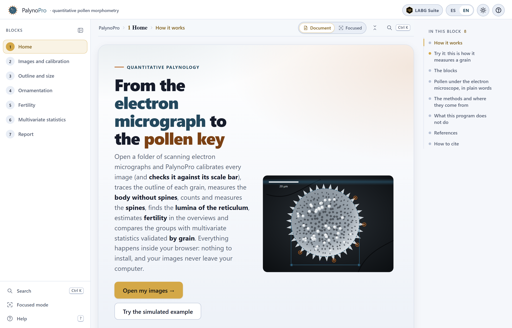
A good way to find out whether the program suits you is to see which questions it answers, and in which block.
| Question | Block |
|---|---|
| How many micrometers does a pixel measure in each picture, and is it consistent with its scale bar? | 2 |
| Which pictures show a single grain, which are overviews and which repeat a grain already photographed? | 2 |
| How large is the body of each grain without its spines? How elongated and how circular is it? | 3 |
| How many spines does it have on the outline, how tall and how far apart? | 4 |
| How large are the lumina of the reticulum, and how rough or regular is the surface? | 4 |
| What proportion of grains is collapsed in each group, and does it differ between groups? | 5 |
| In which variables do the groups differ, and which of them resemble each other? | 6 |
| Can the groups be told apart by the whole set of their measurements? How accurately would a new grain be classified? | 6 |
| How do I publish the methods, the tables and the figures with the parameters I used? | 7 |
Everything that follows rests on six ideas. If you keep them in mind, many of the mistakes made when measuring pollen in photographs are no longer possible.
The starting point is a folder of micrographs, with or without the files that accompany them. The other blocks work on what has already been read: they do not ask for separate tables.
| In | Format and where |
|---|---|
| Micrographs | TIFF from the microscope (8- or 16-bit, compressed or not), PNG or JPEG; a whole folder or individual files (Block 2) |
| Microscope files | The .txt that many instruments leave next to each image, with the same name: the magnification, voltage, working distance and date are read from it (Block 2) |
| Index | An optional .csv with one row per image and columns such as file, group, grain, magnification and exclude; without an index, the group and the grain are read from the file name (Block 2) |
| Key of groups | A text file with lines code = name to give a name to each group (Block 2) |
| Projects | A .json saved earlier by the app itself (Ctrl + S to save, Ctrl + O to open) |
| Out | Format |
|---|---|
| Figures | Diameters by group, spines, lumina, texture, radial profile, fertility, biplot, variance explained, discriminant space and importance of the variables, in SVG or PNG; also through the suite’s figure studio |
| Tables | The index of the images and the tables by group, by picture and by variable in CSV, ready for a spreadsheet |
| Report | Material, methods with the parameters used and their citations, tables, figures, one measured grain per group, limitations and references, in Spanish or in English: to print, save as PDF or download as HTML |
| Methods | The text of the methods, ready to paste into a manuscript |
Only a modern browser, in a version from the last few years. You do not need to install anything or to have internet access; the whole program fits in one folder.
index.html. It is the simplest way and everything works the same: the calculations and the example are inside the program.Open PalynoPro.bat. It starts a minimal local server on port 9940 and opens the app at http://localhost:9940. You only need it to open the app from another computer or a tablet on the same network; the file server.ps1 explains how.Preferences—the language and the light or dark theme—are stored in the browser itself and remembered next time. Data are not: each time you open the app it starts empty. To resume a study there is the .json project, which stores the settings, the list of images with their groups, their calibration and their exclusions, and the results of Blocks 3 to 5 (those of Block 6 are not stored: when the project is opened they are repeated, identical, with one click). If you try to close the tab with unsaved data, the app warns you.
Unlike other applications of the suite, a PalynoPro project stores a reference to each image, not the image. When you open a project the tables and figures come back, but to see the pictures again or to measure them anew you have to open the same folder in Block 2. Micrographs are heavy, and this way the project stays small and your images are not duplicated.
All the applications of the suite share the same bar, the same navigation and the same figure tools, so what you learn here also serves you in the others.
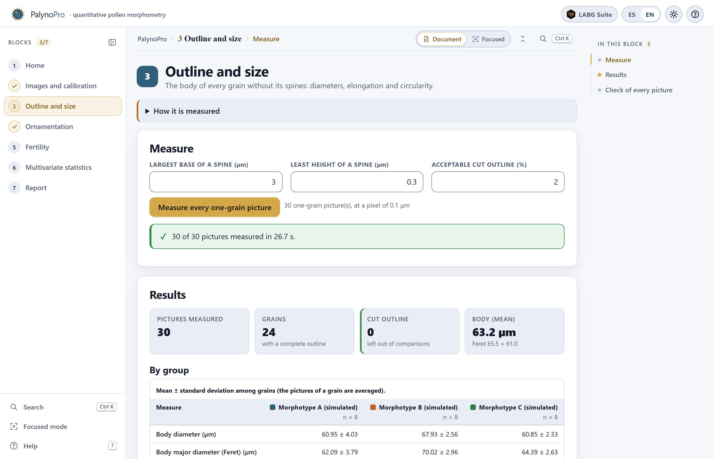
1 2 3 4 5 6 7 8 9 10 11 12 13? key).Ctrl + K). A block, a section, a control or a figure, by its name.At the foot of each block two buttons lead to the previous and the next one. When you change a control and the results are recomputed further down, a floating button appears that takes you back to the control you touched, and another one to go back to the top. Long calculations—measuring all the pictures, counting in the overviews, comparing the groups—show a waiting window with their progress. Almost everything can also be done from the keyboard:
| Key | What it does |
|---|---|
Alt + ← · Alt + → | The previous or the next block; in focused mode, the previous or the next section |
Ctrl + K | Search for a block, a section, a control or a figure |
Ctrl + S · Ctrl + O | Save the project to a .json · open a saved one |
? | Show the list of shortcuts |
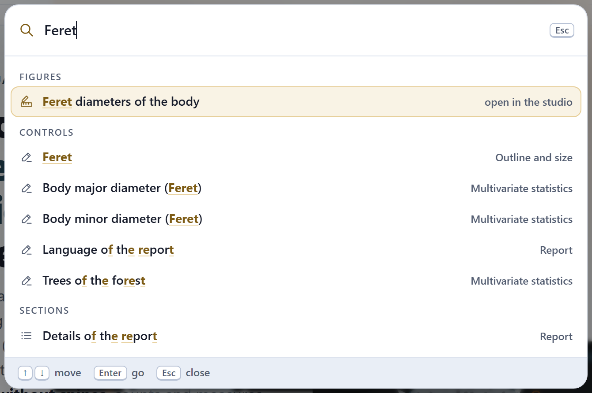
Ctrl + K) with “Feret” typed, after measuring the example: it finds the figure Feret diameters of the body, which opens in the figure studio, the Feret layer of Block 3 and the two Feret variables of Block 6; below them come looser matches, whose names merely contain the letters f, e, r, e, t in that order. Enter takes you to the chosen result.Blocks 3, 4 and 5 end with a check card: the picture with what the app measured drawn on top, so that you can see in each grain whether the outline, the body and the spines are the ones you would have marked. Each layer is turned on or off with its checkbox, and a badly measured picture is excluded with a button.
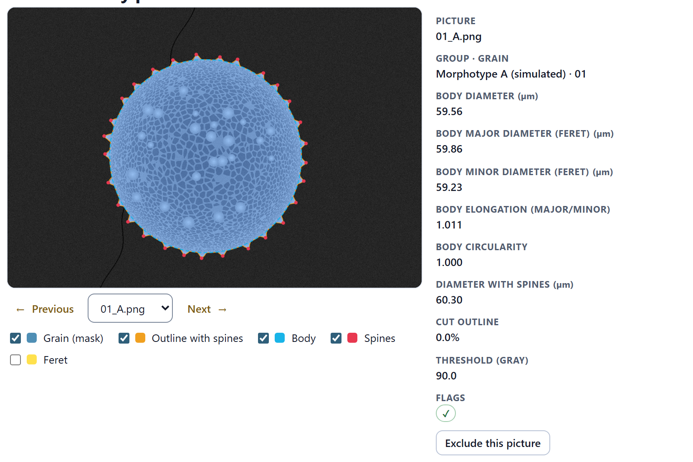
01_A.png of the simulated example: the mask of the grain (blue), the outline with spines (orange), the body without spines (light blue) and the tips of the spines (red). On the right, its measurements: the body measures 59.56 µm, with Feret diameters of 59.86 × 59.23 µm.Every figure of the app can be opened in the figure studio, a window shared by the whole suite where the texts, the font size, the legend and the colors are changed without touching the data, and which exports at the widths and resolutions journals ask for. Next to each figure, the ✎ button opens the figure editor. The SVG and PNG buttons of each figure, and the report, always write the colors of the light theme, even if you are working in the dark one. Chapter 7 explains it in depth.
To learn without images of your own, the app comes with a simulated example: three morphotypes of echinate, reticulate pollen that the program itself draws, every time it is opened, from known parameters. They are not photographs of any plant. It is opened with Try the simulated example on the home page or with Simulated example in Block 2, and the app says that it is simulated.
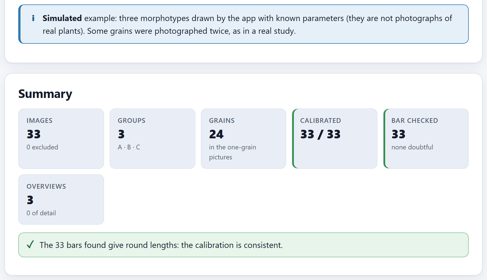
Each morphotype has eight grains. Each grain is drawn in a 1280 × 960 px picture at a magnification of 1000 (0.1 µm per pixel), with its noise, its scale bar and its caption, as a microscope would; grains 3 and 6 of each morphotype are photographed twice, as happens in a real study. In addition, each morphotype has an overview at a magnification of 150 with fourteen grains, some of them collapsed. In all: 30 one-grain pictures, which are 24 grains, and 3 overviews.
| Morphotype | Body (semi-axis, µm) | Minor / major | Spines on the outline | Spine height (µm) | Reticulum mesh (µm) | Collapsed in the overview |
|---|---|---|---|---|---|---|
| A (simulated) | 31 | 0.97 | 24 | 2.0 | 2.2 | 15% |
| B (simulated) | 35 | 0.95 | 32 | 2.8 | 2.6 | 35% |
| C (simulated) | 33 | 0.90 | 22 | 1.7 | 3.4 | 10% |
Since it is known what each grain was drawn with, the example also shows how well the app measures. Morphotype B, for example, is drawn with a body of about 68 µm in diameter, and the app measures a mean of 67.93 µm over its eight grains. The names of the pictures follow the form 01_A.png: the number of the grain and, after the underscore, the group; repeated pictures carry a letter (03a_A.png) and overviews the number 90 (90_A.png).
Every screenshot and every number in this manual comes from the simulated example, with the default values of each control unless the text says what was changed. It is called “morphotype B of the example,” never as if it were a real plant.
The blocks are in the order of a real palynological study. You do not have to go through all of them: if you have no overviews, Block 5 is skipped. The How it works section of the home page sums it up in seven steps.
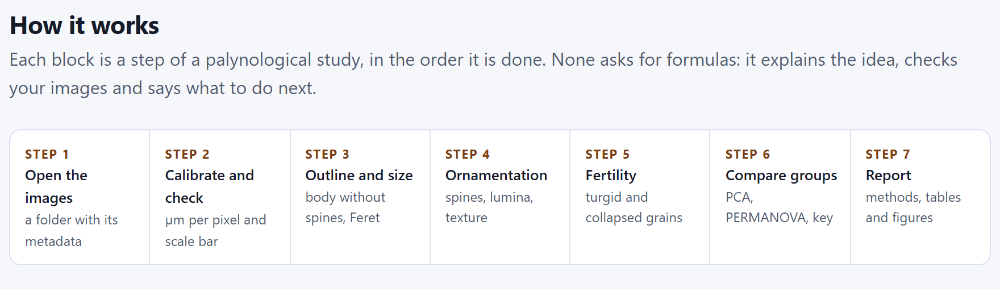
What is read and calibrated in Block 2 is used by all the others; the measurement of Block 3 feeds Blocks 4, 6 and 7. If you change the calibration, a group or an exclusion, the results that depend on it are cleared and the block asks you to measure again; its check mark on the bar goes out as long as it has no result.
A measuring program is worth what its numbers are worth. The PalynoPro engines were checked in two independent ways, and neither uses anybody’s pictures: grains drawn by the program itself, whose truth is known, and statistical calculations repeated separately.
The tests also show where the app falls short, and that was written down. Spine height comes out somewhat lower than the drawn height—about one pixel, 4% in the median—because the finest tip of the cone does not manage to fill a pixel; the diameter of the lumen is proportional to the mesh of the reticulum, but not equal to it, because the lumen is only the dark part of each cell; and the default solidity threshold is conservative: it recognizes most collapsed grains without confusing healthy ones. The chapters say so where it matters.
Knowing where a tool ends is as useful as knowing what it does. The app’s home page says so in What this program does not do:
| It does not | Why, and what to do |
|---|---|
| Rebuild the grain in 3D | It measures the silhouette and the visible face; the spines it counts are those of the outline, not all of those on the surface. |
| Guess the view of the grain | Polar, equatorial or oblique: the Feret diameters are equivalent to the P and E axes only in equatorial view. If you need P and E, photograph oriented views and group them. |
| Read the number on the bar | It computes the pixel size and checks that the bar gives a round length; it does not recognize the text written on the caption. |
| Replace a viability test | Fertility by solidity is a morphological approximation; to claim viability you need a stain or a germination test. |
| Measure the thickness of the wall | The exine, tectum and nexine are measured in sections or with transmission microscopy. |
| Upload your images | Everything is computed on your computer; the app only keeps references to the files you open. |
The first block asks for no images: it teaches. It describes in seven steps how a study is carried out, lets you draw a simulated grain and see live how well the app measures it, explains in plain words the ideas behind each measurement, and puts in view the methods, their sources, the limits of the program and the way to cite it. It is also the way in: from here you open your images, the simulated example or a saved project.
It is the first thing you see when you open the app, and also what appears every time you click the name PalynoPro on the top bar or the Home block on the bar on the left.
At the top come the label Quantitative palynology and the app’s tagline, From the electron micrograph to the pollen key, the same as on the cover of this manual. Below, a paragraph sums up everything the program does, and on the right a simulated echinate, reticulate grain shows what the app draws on each picture: the outline of the body (dashed line), the tips of some spines (circles) and the diameter it measures (the dimension line at the bottom).
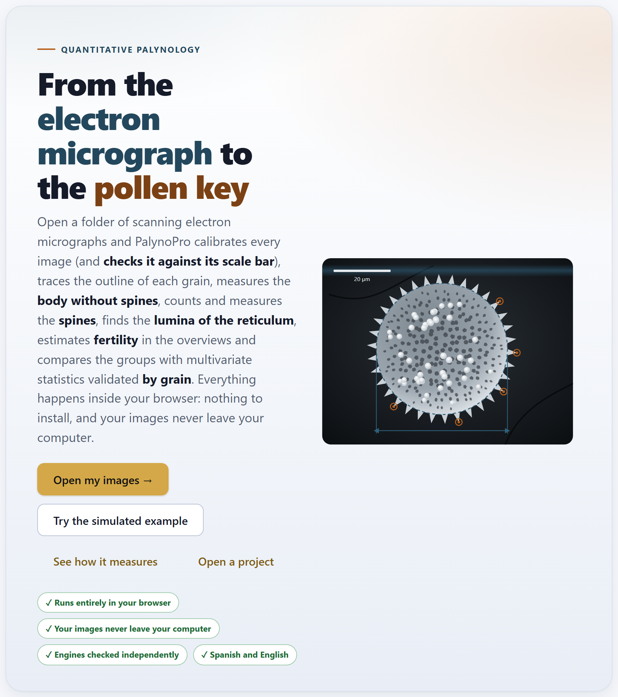
1 2 3 4 5 6 7.json saved earlier by the app (the same as Ctrl + O) and, once it is open, leads to Block 2. If the project already had measured grains, the notice reminds you that the results of Block 6 are not saved and are repeated, identical, with Compare the groups (Chapter 7).If you already have images of your own open and press Try the simulated example, the app asks before replacing them. Whatever has not been saved in a project is lost: save first with Ctrl + S if you need to.
As you scroll down the home page, the sections that follow in this chapter appear in this order. The In this block list on the right names them all, and one click takes you to each.
How it works sets out in a strip the seven steps of a palynological study, in the order in which they are done, each with its label and what it produces (Figure I.6 of the introduction shows it in full):
| Step | In the app | What it produces | Block |
|---|---|---|---|
| 1 | Open the images | a folder with its metadata | 2 |
| 2 | Calibrate and check | µm per pixel and scale bar | 2 |
| 3 | Outline and size | body without spines, Feret | 3 |
| 4 | Ornamentation | spines, lumina, texture | 4 |
| 5 | Fertility | turgid and collapsed grains | 5 |
| 6 | Compare groups | PCA, PERMANOVA, key | 6 |
| 7 | Report | methods, tables and figures | 7 |
The first two steps take place in the same block, and Steps 3 and 4 come out of a single measuring pass (the one launched in Block 3). Step 5 is optional: it only makes sense if you photographed overviews, at low magnification, with many grains in each picture.
Before trusting a program that measures, it is worth watching it measure something whose answer is known. The lab draws a simulated grain with the values you choose and measures it at once with the same engines the app uses on your pictures.
Five sliders set the grain that is drawn; each time you move one, the grain is drawn again and measured again:
| Slider | Range | Default | What it changes in the drawing |
|---|---|---|---|
| Body diameter | 30 to 100 µm | 66 µm | The size of the body, without the spines |
| Elongation | 1 to 1.4 | 1.06 | The ratio between the major and the minor axis; 1 is a circle |
| Spines on the outline | 8 to 50 | 26 | How many spines stick out of the silhouette |
| Spine height | 0.6 to 4 µm | 2.2 µm | How far each spine protrudes above the body |
| Reticulum mesh | 1.6 to 4.4 µm | 2.6 µm | The size of the cells of the net of walls on the surface |
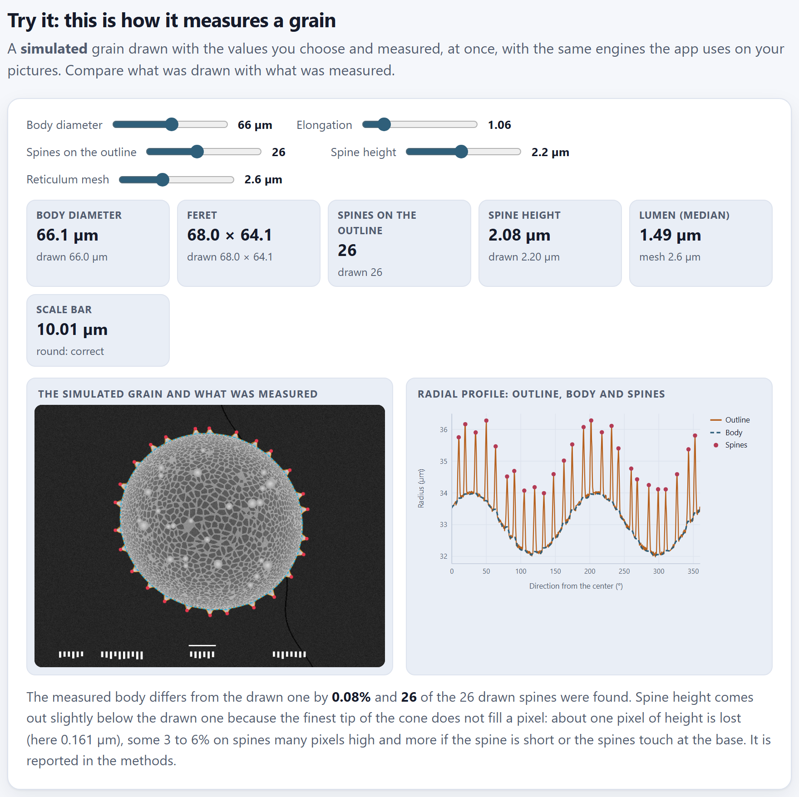
Each tile shows at the top what the app measured and below what was drawn. With the default values the app gives:
| Tile | Measured | Drawn | How to read it |
|---|---|---|---|
| Body diameter | 66.1 µm | 66.0 µm | The diameter of the circle with the same area as the body |
| Feret | 68.0 × 64.1 | 68.0 × 64.1 | The largest and the smallest diameter of the body, in µm |
| Spines on the outline | 26 | 26 | Spines found on the silhouette |
| Spine height | 2.08 µm | 2.20 µm | The mean of the heights, from the tip of each spine to the chord joining its two feet |
| Lumen (median) | 1.49 µm | mesh 2.6 µm | The median diameter of the dark cells |
| Scale bar | 10.01 µm | round: correct | The bar of the caption, measured with the calibration |
The body of the default grain is not a circle: with an elongation of 1.06, its drawn major diameter is 68.0 µm and its minor diameter 64.1 µm, and its body diameter—that of the circle of equal area, the geometric mean of the two axes—is 66.0 µm. That is what the app calls Body diameter in every block: a single number that sums up the size even if the grain is somewhat elongated.
Below the two figures, a status line says it in words. With the default values: “The measured body differs from the drawn one by 0.08% and 26 of the 26 drawn spines were found,” and it goes on with a note on the height of the spines: “about one pixel of height is lost (here 0.161 µm), some 3 to 6% on spines many pixels high and more if the spine is short or the spines touch at the base. It is reported in the methods.” (below).
The simulated grain and what was measured is the simulated micrograph, in grayscale, with its scale bar and its caption at the bottom as a microscope would put them, and on top what the app found. Radial profile: outline, body and spines is the same information unrolled: on the horizontal axis, the direction from the center of the grain (from 0 to 360°); on the vertical one, the radius in micrometers. The orange line is the outline with spines, each peak is a spine (red dot) and the dashed blue line is the body that remains when the peaks are cut. The two broad waves of the body are the elongation: in an elongated grain the radius grows and shrinks twice per turn.
The outline is read as the distance from the center to the edge in 720 directions, one every half degree. A spine is a narrow peak in that profile; the body, by contrast, changes slowly. The app applies to the profile a grayscale opening (Serra, 1982) with an element as wide as the base of a spine: every peak narrower than that base disappears, and what remains is the body. The cut peaks that protrude at least 0.3 µm are the spines, and the height of each one is measured from its tip to the chord joining its two feet, so that it does not depend on the curvature of the body along that stretch. In the lab the base adjusts itself to the size of the drawn grain; with your pictures it is set by the Largest base of a spine (µm) control of Block 3.
Move the sliders to see where the measurement is put to the test. Figure 1.3 shows a grain of 40 µm, with an elongation of 1.30, 40 spines of 3.5 µm and a mesh of 4.0 µm.
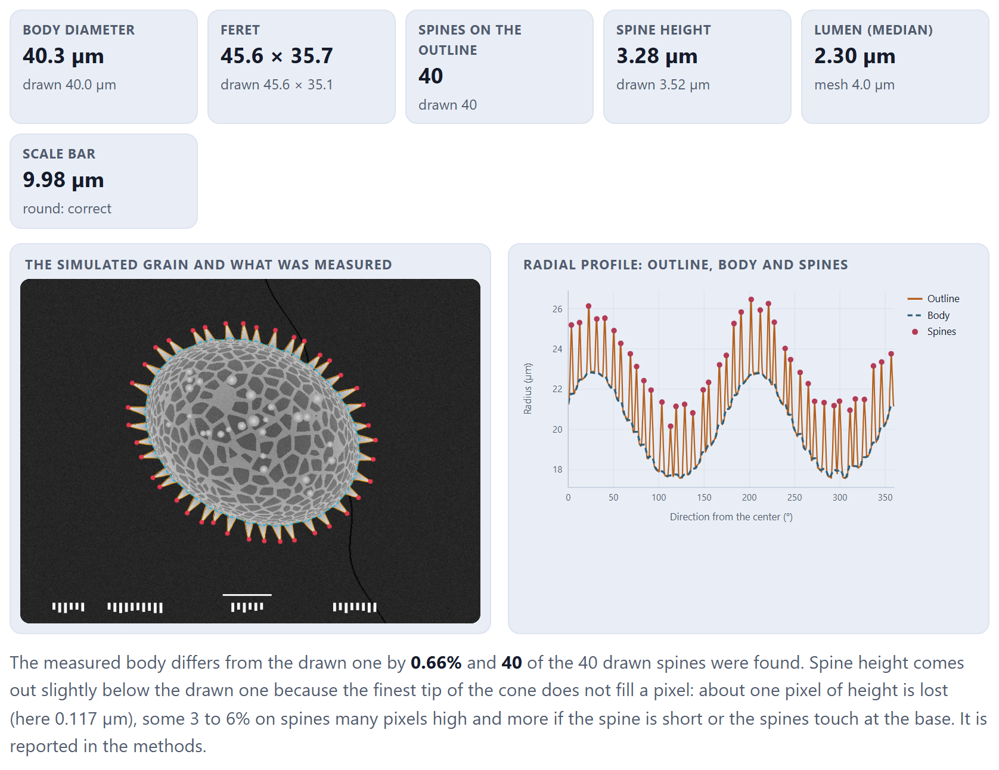
There are three things to learn from the two figures, and all three come back with your pictures:
The grain of the lab is always drawn with the same seed, in an 800 × 600 px image, and with the magnification that makes the grain fill somewhat more than half of the field. That is why the same values always give the same numbers, and the scale bar comes out round (10.01 µm in Figure 1.2, 9.98 µm in Figure 1.3).
The blocks shows one card for each of Blocks 2 to 7, with its number, a small drawing, its label, its name and what it does. A click on the card opens the block, just like its button on the bar on the left. Blocks that need images or earlier results say so when they are opened and lead to the missing block.
| Block | Label | What it does, according to its card |
|---|---|---|
| 2 | Data | Reads TIFF, PNG or JPEG, the text files of the microscope and an optional index; calibrates each picture and checks it against its scale bar |
| 3 | Morphometry | The outline of each grain, the body without spines, its Feret diameters, elongation and circularity, with a visual check of every measurement |
| 4 | Ornamentation | Spines on the outline (number, height, spacing and density), lumina of the reticulum and texture of the surface |
| 5 | Viability | In the overviews, each grain with its silhouette and its solidity; the proportion of collapsed grains by group, with its interval |
| 6 | Comparison | Table by group with Tukey letters, principal components, PERMANOVA, discriminant analysis and random forest validated by grain |
| 7 | Publication | The methods written out with their references, a report to print or save as PDF, and every table and figure |
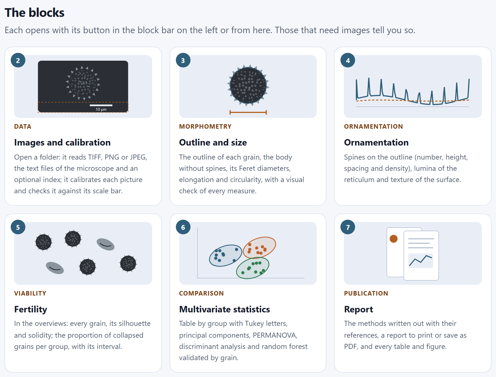
Pollen under the electron microscope, in plain words gathers, in six collapsible topics, the ideas behind the measurements. Each topic shows on the right the block where it is used; the first one comes open and the others open with a click on their title.
| Topic | Used in | The idea, in one line |
|---|---|---|
| How a grain looks under the electron microscope | Blocks 2–4 | The secondary-electron image shows the surface: the edge and the spines shine against the dark background, and that is why the grain is separated from the background with a gray threshold. The wall is not seen in thickness, and only the half of the grain facing the detector is seen. |
| Calibration: how many micrometers a pixel measures | Block 2 | The field measures the reference width divided by the magnification, and the pixel, that field divided by the width in pixels of the saved image; the scale bar checks it (Chapter 2). |
| Body and ornamentation | Blocks 3–4 | Size is reported for the body; the radial profile in 720 directions without the narrow peaks is the body, and the peaks are the spines (echinae). Feret is equivalent to the polar and equatorial axes only in equatorial view. |
| The reticulum: muri and lumina | Block 4 | The bright walls enclose dark lumina; a lumen is a pixel darker than its neighborhood. Texture sums up the contrast and the regularity of the surface. |
| The grain is the unit, not the picture | Block 6 | The pictures of the same grain are averaged, and validation leaves out the whole grain. |
| Fertility from the shape | Block 5 | An empty grain folds and loses solidity (area divided by the area of the convex hull); it is a morphological approximation, not a viability test. |
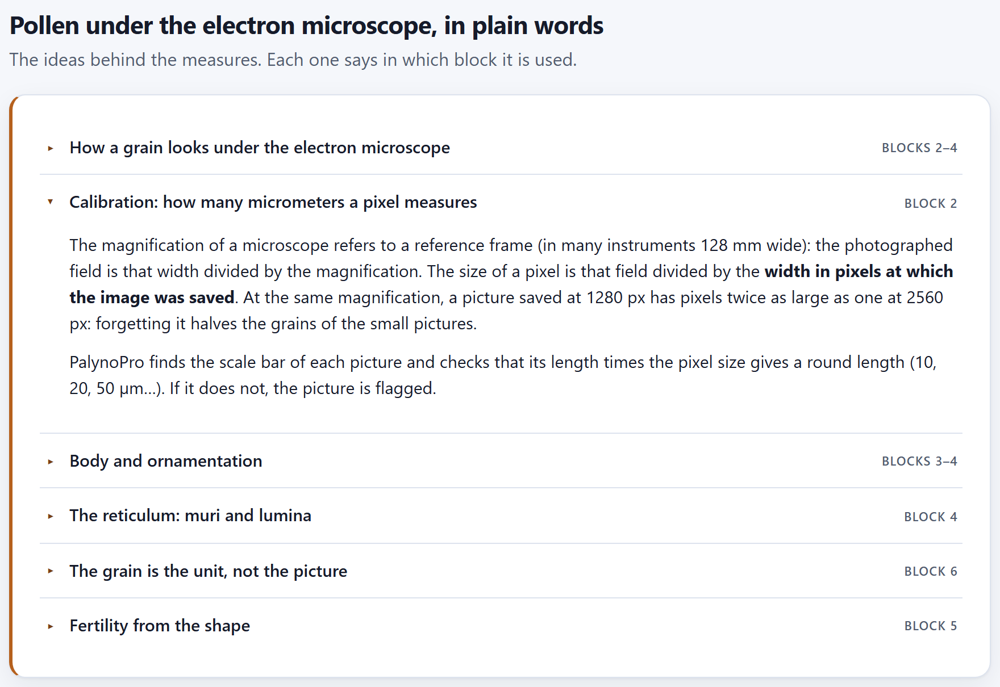
The introduction (I.3) turns these ideas into six rules, and each chapter applies them where they belong. If you are going to read only one topic before opening your pictures, read the one on calibration: it is the mistake that most often shrinks or enlarges grains without anybody noticing.
Fourteen cards name the methods the program uses, each with its family and the work that defines it. All are written from scratch for the app; the citation says where the idea comes from, not where the code comes from.
| Family | Method and source | Block |
|---|---|---|
| Calibration | Pixel size from magnification and width; scale bar checked | 2 |
| Image | Otsu threshold (1979), to separate the grain from the background | 3 5 |
| Image | Area resampling to a common pixel (Wolberg, 1990) | 2 3 |
| Shape | Grayscale opening of the radial profile (Serra, 1982): the body without the spines | 3 |
| Shape | Feret widths by rotating calipers (Shamos, 1978) | 3 |
| Shape | Convex hull (Andrew, 1979), for solidity | 5 |
| Surface | Lumina by local threshold (Niblack, 1986) | 4 |
| Surface | Gray-level co-occurrence matrix (Haralick et al., 1973) | 4 |
| Statistics | ANOVA, Tukey (1949), Kruskal and Wallis (1952), Holm (1979) | 6 |
| Multivariate | Principal components (Pearson, 1901; Hotelling, 1933) | 6 |
| Multivariate | PERMANOVA (Anderson, 2001) | 6 |
| Classification | Linear discriminant analysis (Fisher, 1936) | 6 |
| Classification | Random forest (Breiman, 2001) | 6 |
| Viability | Proportion with the Wilson interval (1927) | 5 |
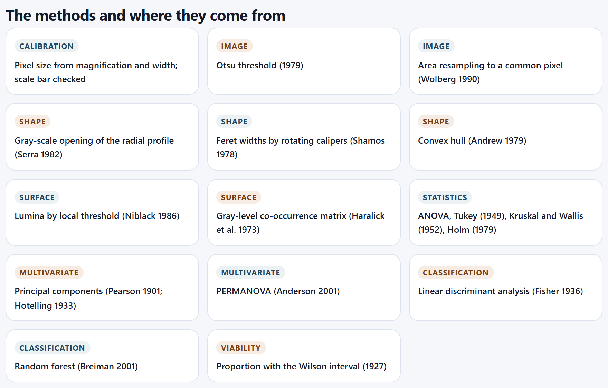
Each chapter explains the method where it is used, and the report of Block 7 writes out those that took part in your analysis, with their parameters and their citations.
Six cards say where the tool ends. The introduction (I.10) already gathers them in a table; here is what each limit means when planning a study.
note column of the index.References lists, in alphabetical order, the 22 works cited by the methods and the texts of the app: those of the methods in Section 1.6 and, in addition, Borgefors (1986), for the distance transform with which Block 4 counts the density of lumina away from the edge of the grain; Cohen (1960), for the κ coefficient with which Block 6 sums up the accuracy of the classifiers; Erdtman (1952), Halbritter et al. (2018) and Punt et al. (2007), for the palynological terminology; and McArdle and Anderson (2001), for PERMANOVA. Appendix F gives them in full, grouped by topic.
At the end of the home page, How to cite gives the citation of the program ready to paste, and the Copy the citation button copies it to the clipboard (the app confirms with “Citation copied”). In the Spanish interface the citation is in Spanish. Below it, at the foot of the home page, the User’s manual link opens this manual (in the Spanish interface, Manual de usuario (en español) opens the Spanish edition).
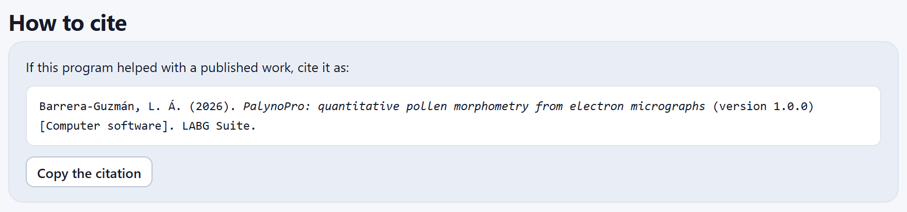
The citation does not yet carry a digital object identifier (DOI): one will be added when the program is published. Cite the version you worked with—the one given by the citation in your copy—because results may change between versions. Along with the program, cite the methods you used: the methods text of Block 7 already includes their references.
| If this is the first time you use the app… | open Try the simulated example and work through the blocks with this manual: all its numbers come from that example. |
| If your pollen has very fine or very tall spines… | reproduce it in the lab with similar values and see how far the measured height is from the drawn one. |
| If you are going to report spine height… | give it as a comparative measurement: it comes out about one pixel below the real one (6 to 7% in the grains of this chapter); the methods of Block 7 already say so. |
| If you are going to report the reticulum… | report the diameter of the lumen as a lumen, not as a mesh. |
| If you already have a saved project… | Open a project and then, in Block 2, open the folder of its pictures again: if they are the same, the results are kept. |
These are guides for interpretation, not laws: what you know about the plant, the preparation and how it was photographed always comes first.
The lab does not change when a slider is moved. The grain is drawn and measured again a moment after you release it; if you move several at once, the app finishes the measurement in progress and makes one more with the final values. “Open a project” says the file is not a PalynoPro project. The .json belongs to another application of the suite or was edited by hand. The project opened but the pictures are not shown. That is expected: the project does not store the images; open their folder in Block 2 (Chapter 2).
Everything the app measures later depends on two things decided here: how many micrometers a pixel measures in each picture, and to which group and which grain each picture belongs. The block reads the folder with whatever comes with it, calibrates each image, checks it against its own scale bar, recognizes which pictures show one grain and which are overviews, and lets you correct whatever is needed before measuring.
The block presents itself with its subtitle, Open a folder, check the groups and the calibration of every picture., a drop-down that explains it in two paragraphs, and a single card: the area where the images are dropped.
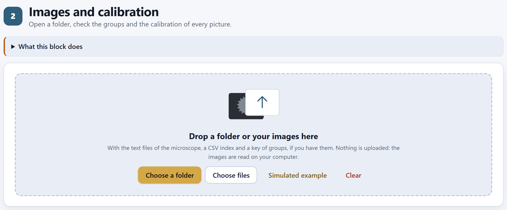
1 2 3 4 5A = Morphotype A) and the check against the bar..txt, a .csv index or a key.You can also drag the folder, or a handful of files, from your system’s file explorer onto the dotted area of Drop a folder or your images here. Nothing is uploaded anywhere: the files are read on your computer, and each image is read in full only once—to learn its size, look for its scale bar and make a thumbnail—and again only when it is measured.
There is no need to sort anything: the app classifies each file by its extension and its name.
| File | How it recognizes it and what it takes from it |
|---|---|
| Images | TIFF (8- or 16-bit; uncompressed or with LZW, PackBits or Deflate; grayscale, palette or color), PNG, JPEG, BMP, WebP and GIF. Everything is converted to grayscale: one gray level per pixel. TIFF is read by a reader of the program’s own, because the browser cannot display it. |
The microscope’s .txt | A .txt with the same name as an image (05_B.txt next to 05_B.tif). From it, or from the text some instruments store inside the TIFF itself, the magnification, the pixel size if it is written, the voltage, the working distance and the date are read. |
| The index | A .csv (or a .txt that does not belong to any image) with a header and one row per image. The only required column is the file column. Only the first index found is used. |
| The key of groups | A text file, other than the index, with lines code = name or code: name. |
Columns are recognized by their name, in English or in Spanish, regardless of capitals and accents, and the separator can be a comma, a semicolon or a tab. Each row is joined to its image by the file name, with or without the extension.
| Column | Also accepted | What it does |
|---|---|---|
file | archivo, image, foto, id… | The name of the image (required) |
group | grupo, morfotipo, species, taxon, code… | The group; it prevails over what is read from the file name |
name | nombre, group_name… | The long name of the group of that row |
grain | grano, unit, specimen… | The grain; two pictures with the same group and grain are the same grain |
magnification | magnificacion, mag, aumentos… | The magnification, if the microscope’s .txt did not give it |
um_per_px | um_por_px, pixel_size_um… | The pixel size, if you already know it |
exclude | excluir, excluded, descartar | Excludes the picture if it says 1, si, yes, true or x |
note | nota, notes, comentario… | A comment, which the viewer shows |
tier | nivel, tipo, kind | The kind of picture: whatever contains “pano” or “over” is an overview; “det,” a detail; anything else, one grain |
It gives each group code a readable name, which then appears in tables, figures and the report. For example, a file key.txt with these two lines:
A = Morphotype A · G1: Morphotype oneThe code is a single word of letters and digits, like those read from file names: A, G1, P12 or 7 will do, and so will one of up to eight characters with a hyphen or an underscore in the middle (north-2). What comes after the = or the colon is the name. If you prefer not to make a separate file, type the names in the Groups card (2.4) or in the name column of the index.
When it finishes, a message below the buttons says what was read: how many images, how many microscope files, the name of the index and how many group names the key brought; and, if some image could not be read, its name and the reason. With the example, the message warns that it is simulated: “three morphotypes drawn by the app with known parameters (they are not photographs of real plants). Some grains were photographed twice, as in a real study.” The five cards that follow appear below it.
If images are already open and you choose another folder, the new ones are added to those already there; those with a name that is already present are not repeated. If you opened a project earlier, opening its folder joins each picture to its saved row again: the message says so (“…, 33 of the project opened again,” for example) and the results of the project are kept. If instead the folder brings images that were not there and there were already results, the app asks first: “There are N image(s) that were not in the set. Adding them clears the results already computed (outline, ornamentation, fertility and statistics), which will have to be computed again. Continue?”. If you go on, the reading message confirms it with “The set changed: the previous results were cleared.”. To start from scratch, Clear.
Summary is the card worth looking at first: six tiles and, below them, the notices of whatever the app found. Figure I.5 of the introduction shows it with the example just opened.
| Tile | Example | What it counts |
|---|---|---|
| Images | 33 | All the open images; below, how many are excluded (0) |
| Groups | 3 | The distinct group codes, with the first six below (A · B · C) |
| Grains | 24 | The distinct grains (the combinations of group and grain) in the one-grain pictures that are not excluded: repeated pictures of a grain count once, and overviews do not count |
| Calibrated | 33 / 33 | Those that have a pixel size; the green border says they all do |
| Bar checked | 33 | The bars that give a round length; below, how many are doubtful (none doubtful) |
| Overviews | 3 | The pictures of the overview kind; below, the detail ones (0) |
The example has 30 one-grain pictures, but 24 grains: eight per morphotype, of which grains 3 and 6 were photographed twice. The Grains tile counts grains, not pictures, and it is the same number that Block 3 will measure. If you see more grains here than you photographed, some repeated picture did not end up with the same group and grain as its twin (2.5).
Below the tiles the app writes one notice for each thing it found. With the example only the green one appears: “The 33 bars found give round lengths: the calibration is consistent.”
| Notice (abridged) | What it means and what to do |
|---|---|
| … image(s) have no magnification nor pixel size | Neither the .txt, nor the TIFF, nor the index gave anything to calibrate them with. Type their magnification in the table (2.5) or measure their bar by hand (2.6). Meanwhile they stay out of the measurements. |
| … bar(s) do not give a round length with the calibration | Check those pictures with the Doubtful bar filter. The most common cause is a mistyped magnification; the other, an instrument with a different reference width (2.3). |
| The … bars found give round lengths | Everything is in order (green). |
| In … image(s), the pixel size of the index or the file did not match the scale bar while the magnification did: the magnification was used | A pixel size copied wrongly into an index, or written wrongly by the instrument. The app replaced it with the one from the magnification, and the viewer says what the original was. Correct that index. |
| … picture(s) without a bar | They are calibrated by their magnification, without a check (blue, for information). |
| No group was recognized in the names | Adjust the pattern of the name (2.3) or load an index with a group column. |
In the table of images, change the magnification of 02_A.png from 1000 to 1200, as if it had been mistyped. The app recomputes the pixel of that picture: 128,000 µm ÷ (1200 × 1280 px) = 0.08333 µm. Its bar measures 100 px, which would now give 8.333 µm: that is not a round length—the nearest one, 10 µm, is almost 17% away—so the picture is flagged. The tile changes to 32 with 1 with a doubtful bar, with an amber border, and the notice appears (Figure 2.2). At 1200× the grain of that picture would have measured a sixth less than it does.
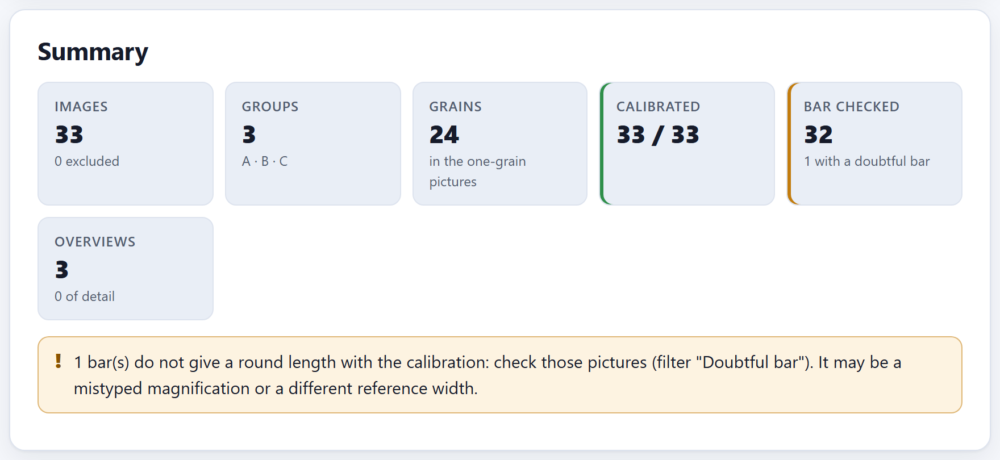
02_A.png.A doubtful bar does not take the picture out of the analysis: the app goes on measuring it with the calibration it has, because it cannot know which of the two—the magnification or the bar—is wrong. That is for you to decide. When you type 1000 again, the notice disappears.
Three settings that apply to all the images, and that are not applied until you press Apply.
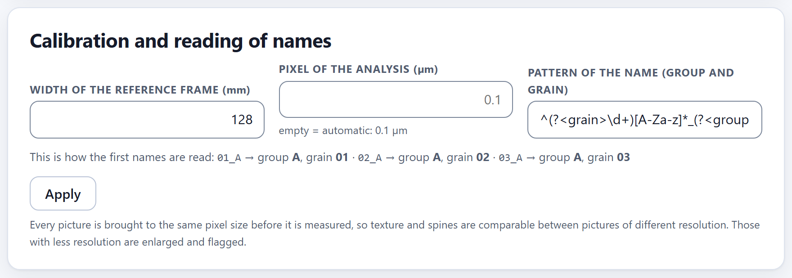
The magnification an electron microscope writes refers to a reference frame of fixed width: the photographed field measures that width divided by the magnification. The pixel size is that field divided by the width in pixels of the image as it was saved:
The default value, 128 mm, is that of many instruments (those that leave text files with $CM_MAG lines). In the example: 128 × 1000 ÷ (1000 × 1280) = 0.1 µm per pixel in the one-grain pictures, and 128 × 1000 ÷ (150 × 1280) = 0.66667 µm in the overviews. If your instrument uses a different frame, the doubtful-bar notice will come up in almost all the pictures at once and in the same proportion: that is the sign that this number must be changed. An empty or non-positive value goes back to 128.
The app takes the pixel size from the strongest source each picture has, in this order: the one you measured by hand on the bar (2.6); the one in the index (um_per_px); the one the instrument wrote in its .txt or in the TIFF; the one that comes from the magnification and the reference width; and, if there is nothing, the picture stays not calibrated. The Source column of the table says which one was used. There is a single exception: if the size from the index or the instrument contradicts the bar and the one from the magnification agrees with it, the magnification wins, and the summary gives notice of it.
When it reads each image, the app looks for its bar in the bottom fifth: a strip of almost white pixels, at least 2% and at most 45% of the width of the picture, that repeats with the same start and the same length (±2 px) over at least three consecutive rows, and that is almost completely filled. If there are several, it takes the longest. Its length in pixels times the pixel size must give a round length: 1, 2 or 5 times a power of ten (1, 2, 5, 10, 20, 50, 100 µm…), with a tolerance of 4%.
| Pictures | Magnification | µm per pixel | Bar | Length | Verdict |
|---|---|---|---|---|---|
| 30 one-grain | 1000× | 0.1 | 100 px | 10 µm | round: 10 µm |
| 3 overviews | 150× | 0.66667 | 152 px | 101.333 µm | round: 100 µm (1.3% difference) |
02_A.png at 1200× (example in 2.2) | 1200× | 0.08333 | 100 px | 8.333 µm | expected 10 µm |
The bar also tells where the microscope’s caption begins—the strip at the bottom with the bar, the voltage and the other data—: the app cuts the picture a few rows above the bar, so that neither the bar nor the letters are taken for part of the grain. If there is no bar, it cuts at a dark strip at the foot, if there is one. The viewer (2.6) draws that cut.
Before measuring, all the one-grain pictures are brought to the same pixel size by area resampling (Wolberg, 1990). That way texture, lumina and spines are measured with the same fineness in pictures taken at different resolutions. Empty—the normal case—means automatic: the 90th percentile of the pixel size of the included one-grain pictures, rounded to two significant figures, so that almost none of them has to be enlarged. The help line below says what it came to: empty = automatic: 0.1 µm in the example, where all one-grain pictures have the same pixel. Pictures with less resolution than the analysis pixel are enlarged, and Block 3 flags them. Overviews are not brought to this pixel: Block 5 counts them at their own pixel (reduced, if they are more than 1600 px wide).
Type a value only if you want to fix it—for example, to compare two studies at the same pixel. A pixel finer than that of your pictures adds no detail: it only enlarges.
If there is no index, the group and the grain of each picture are read from its name (without the extension) with a regular expression that has two named parts, (?<grain>…) for the grain and (?<group>…) for the group. The one the app comes with is:
^(?<grain>\d+)[A-Za-z]*_(?<group>[A-Za-z]+\d*)It reads like this: at the start, one or more digits (the grain); then optional letters (the one that tells a second picture of the same grain apart); an underscore; and letters followed by optional digits (the group). With it, 01_A is grain 01 of group A, and 03a_A is another picture of the same grain 03. The line This is how the first names are read checks it live on the first three images while you type: in the example, “01_A → group A, grain 01 · 02_A → group A, grain 02 · 03_A → group A, grain 03”.
| Your files are called | Pattern |
|---|---|
A_01.tif, A_01b.tif | ^(?<group>[A-Za-z]+\d*)_(?<grain>\d+) |
P3-g12-1.tif | ^(?<group>P\d+)-g(?<grain>\d+) |
north_07.png | ^(?<group>[a-z]+)_(?<grain>\d+) |
When you press Apply, the app checks that the pattern is a valid expression (if not, it says so and changes nothing); if the pattern changed, it reads the group and the grain of the pictures again with it; it recomputes the calibration of all of them with the reference width, classifies the kinds of picture again and confirms with “Calibration applied”. Everything that had been measured in Blocks 3 to 6 is cleared, because it depended on the previous settings.
The pattern only guesses. A group or a grain that came from the index, or that you typed in the table of images, is respected even if you change the pattern, and the app says so: “The new pattern did not change the group or grain of N image(s): they came from the index or were typed in the table, and those prevail. To change them, edit them in the table.”. The same goes for the pixel size: if, on recomputing, the one from the index or the instrument still contradicts the bar, the app keeps using the one from the magnification, as when the folder was opened.
One row per group, with its code and its color—the same it will have in every figure—, a Name field and two counts without the excluded pictures: Images (all) and Grains (in the one-grain pictures).
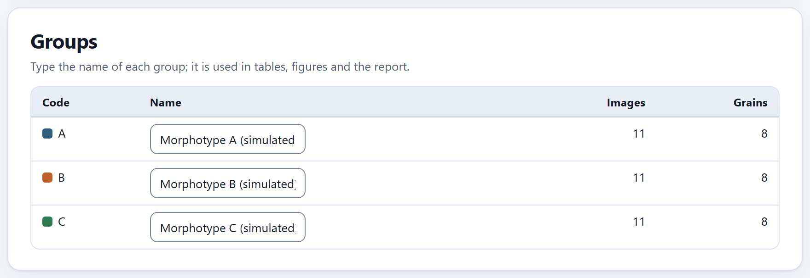
The name is used in the tables, the figures and the report instead of the code; if you leave it empty, the code is used. It comes from the key of groups, from the name column of the index or, in the example, from the app itself (“Morphotype A (simulated)”). Changing it clears no result: it only changes how things are labeled.
The code, on the other hand, is changed in the table of images, picture by picture (2.5). A group exists as long as some picture has it.
One row per image, with what the app read and computed from it, and the fields you can correct. At the top, seven filters choose which rows are shown: All, One grain, Overviews, Detail, Doubtful bar, Not calibrated and Excluded.
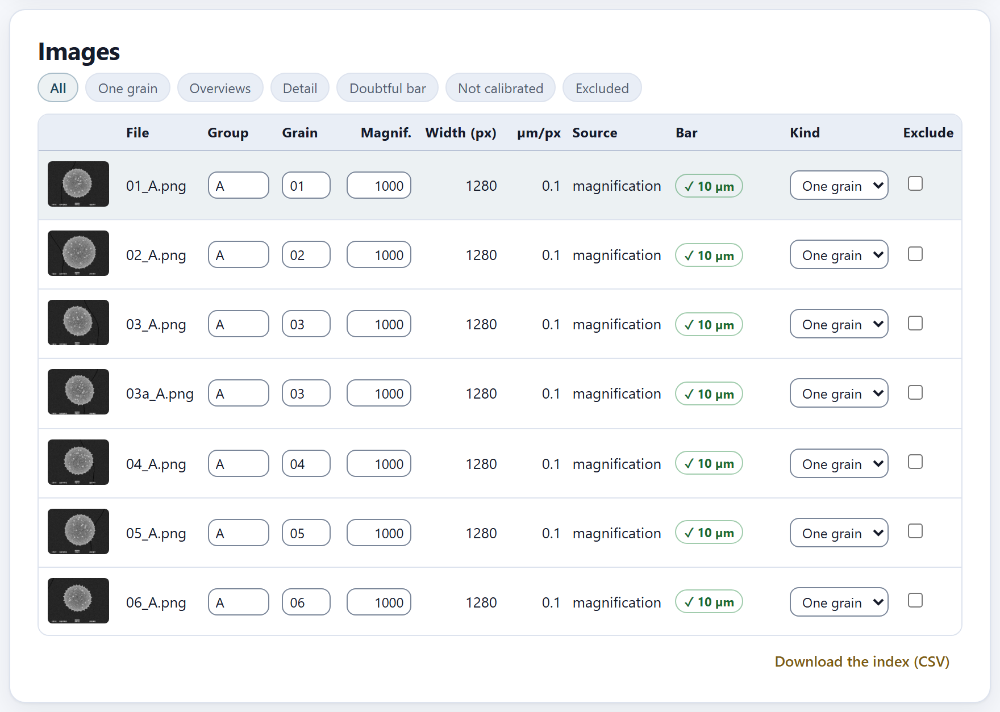
| Column | What it shows |
|---|---|
| (thumbnail) | A click opens it in the viewer (2.6) |
| File | The name of the file |
| Group · Grain | Editable: correct here what the pattern or the index read wrongly. Two pictures with the same group and grain are averaged as a single grain |
| Magnif. | Editable: the magnification. When it is changed, the pixel is recomputed and the bar is checked |
| Width (px) | The width of the saved image, the one that goes into the formula |
| µm/px | The pixel size, with five significant figures |
| Source | Where the pixel came from: by hand, index, instrument, magnification or not calibrated |
| Bar | ✓ and the length if it is round (green); ! and the length if it is doubtful (amber); no bar; or not calibrated. Hovering the pointer shows its length in pixels |
| Kind | One grain, Overview or Detail, with a menu to change it |
| Exclude | Leaves the picture out of everything without deleting it; the row is shown dimmed |
The app proposes the kind of each picture by comparing its magnification with the median of all of them: if it is 0.6 times the median or less, it is an overview (many grains, for Block 5); if it is 1.8 times or more, it is a detail (a close-up of the surface); anything else is one grain (for Blocks 3 and 4). In the example the median is 1000×, and the three pictures at 150× are overviews. Block 3 measures only the one-grain pictures and Block 5 counts only the overviews; detail pictures are kept and can be seen in the viewer, but they are not measured. If the proposal is not right, change the kind with the menu: your choice is respected even if you press Apply afterward.
Any change in the group, the grain, the magnification, the kind or the exclusion of a picture clears whatever had been measured in Blocks 3 to 6, because it no longer applies; their check mark on the bar goes out until you measure again. That is why it is worth leaving this block in order before moving on to the next. Exclude a picture when it should not count—out of focus, with the grain cut by the edge, with two grains on top of each other—; a picture that is not calibrated stays out by itself until it has a pixel size.
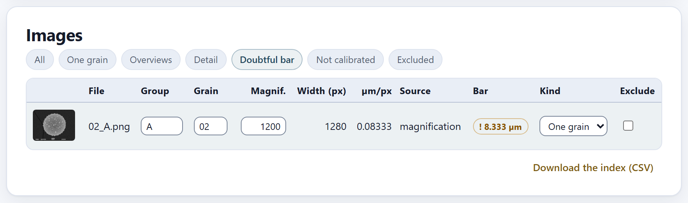
02_A.png remains, with 1200×, 0.08333 µm per pixel and the bar marked ! 8.333 µm.Saves the whole table as palynopro_index.csv, with the columns archivo, grupo, nombre, grano, magnificacion, ancho_px, um_por_px, fuente, barra_px, barra_um, nivel, excluir and nota (the column names are always these, in either interface language). It is a good record of how each picture was calibrated, for the supplementary material of a paper, and also an index that the app reads again: correct it in a spreadsheet, put it in the folder of the pictures and open the folder again. The fuente (source) and nivel (kind) columns are written with the words of the interface (with the interface in English, magnification, one grain, overview, detail), and when the index is read again the app understands the kind in either language.
The downloaded index comes with um_por_px filled in, so when it is read again the source of every picture becomes index. If you later correct a magnification, first delete that value in the spreadsheet; otherwise the index will keep prevailing.
The viewer shows the chosen picture, in grayscale and at most 1200 px wide, with two marks on top, and on its right the data the app knows about it. When the block is opened it shows the first image.
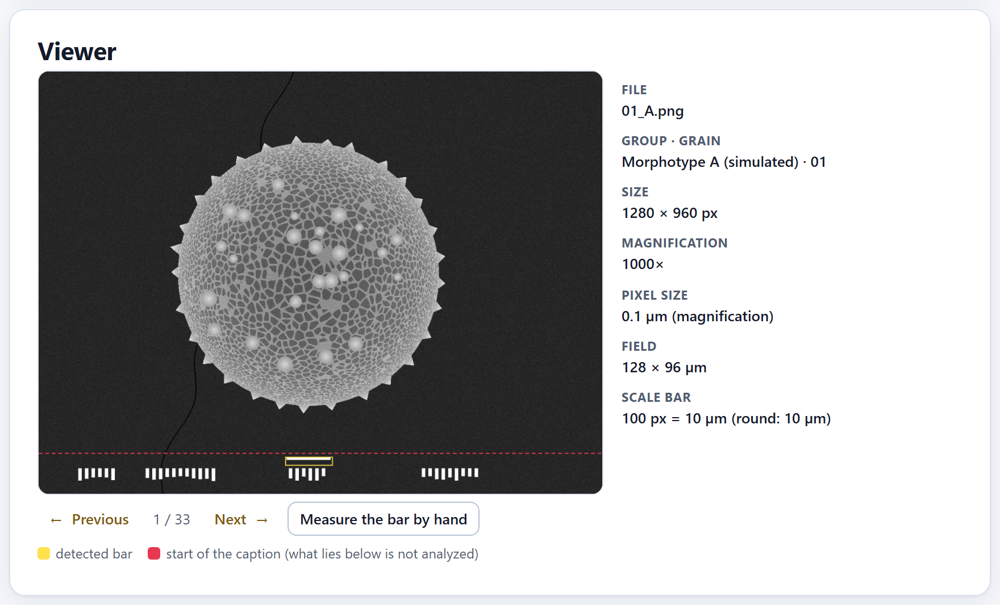
1 2 3 4 5 6 701_A.png, the first simulated grain of morphotype A.For 01_A.png the data are: 1280 × 960 px, 1000×, 0.1 µm (magnification), a field of 128 × 96 µm and a bar of “100 px = 10 µm (round: 10 µm)”. If the microscope file has them, the Voltage, the Working distance and the Date are added, as well as the Note from the index. When the app replaced the pixel size from an index or from the instrument (2.2), it says here what it was and why it was not used.
Look at the two marks on any picture that seems odd to you. The yellow rectangle must surround the scale bar, not some other white thing in the caption; the red line must lie above the whole caption and below the grain. Whatever lies below the line is never analyzed.
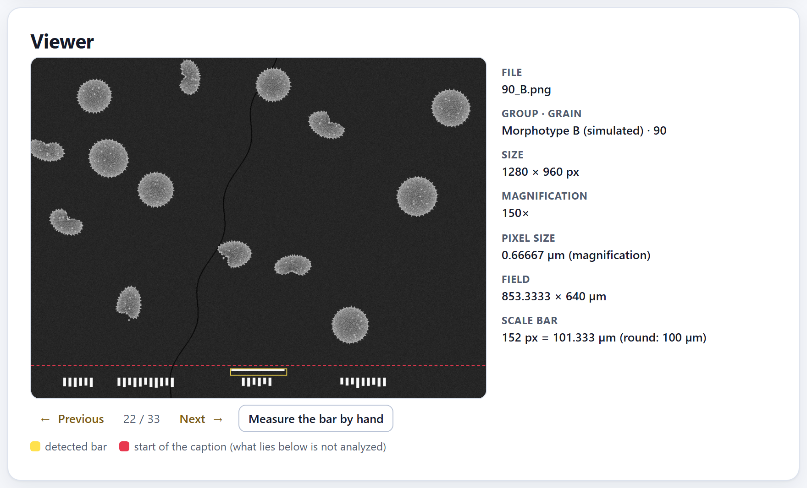
90_B.png) at 150×: 0.66667 µm per pixel, a field of 853.3333 × 640 µm and a bar of “152 px = 101.333 µm (round: 100 µm)”. The folded grains are the collapsed ones that Block 5 will count.For a picture without a magnification, with a bar the app does not find, or with a bar you know is correct even though the calibration says otherwise:
The pixel size becomes length ÷ pixels, with the source by hand, which prevails over all the others; the app confirms with “Calibrated by hand:” and the value, and clears whatever had been measured afterward. Make the clicks carefully and on the largest picture you can: an error of two pixels on a 100 px bar changes every size in that picture by 2%.
A picture that came from a project but whose folder has not been opened again cannot be seen: the viewer says “The image is not open in this session: open its folder again.”
| If Calibrated does not say all of them… | type the magnification of the missing ones or measure their bar by hand (Not calibrated filter). |
| If one or a few bars are doubtful… | check their magnification: it is almost always a mistyped digit. |
| If almost all the bars are doubtful, in the same proportion… | your instrument uses a different reference width: change it and press Apply. |
| If the app warns that it replaced the pixel size from an index… | correct the index; the value it had is in the viewer. |
| If the groups or the grains were not read correctly… | adjust the pattern, load an index or correct them in the table. |
| If a picture is an overview or a detail and was left as “One grain”… | change its kind: Block 3 would measure it as if it were a grain. |
| If everything is green… | go on to Block 3. |
These are guides for interpretation, not laws: what you know about the plant, the preparation and how it was photographed always comes first.
An image could not be read. The message says which one and why: “TIFF compression N not supported”, “TIFF without size”, “not a TIFF” or “the browser could not read this image (damaged file or unsupported format)”. The most common case is a TIFF with an unusual compression. Open it in an image program and save it as uncompressed TIFF or as PNG. Two different grains ended up as one. They have the same group and the same grain number: correct the grain in the table. The same grain ended up as two. The pattern did not recognize the letter of the repeated picture (03a): correct the grain. The yellow bar surrounds something else. Something in the caption is longer and whiter than the bar: measure the bar by hand. The key of groups did not set the names. Its codes are not the same as those of the pictures (capitals and lowercase count) or they carry spaces: correct them, or type the names in Groups. The results of the other blocks were cleared. That is expected when the calibration, a group, a grain, a kind or an exclusion is changed: measure again.
The size of a pollen grain is the size of its body, without the ornamentation. This block separates every grain from the background, reads its outline in 720 directions, strips off the spines and measures what is left: the diameter, the Feret diameters, the elongation and the circularity. A single pass measures every one-grain picture; the ornamentation of Block 4 comes out of it as well.
Below the title of the block, Outline and size, and its subtitle, “The body of every grain without its spines: diameters, elongation and circularity.”, the drop-down How it is measured sums up the method in two paragraphs. This section explains it step by step, in the order in which the app works through each picture.
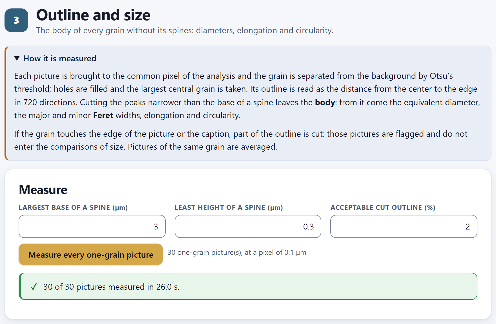
| In the app | What it is |
|---|---|
| Body diameter (µm) | The equivalent diameter: that of a circle with the same area as the body, √(4A/π) |
| Body major diameter (Feret) (µm) | The largest width of the body: what a caliper set along the longest direction would read |
| Body minor diameter (Feret) (µm) | The smallest width, along the shortest direction |
| Body elongation (major/minor) | The major Feret over the minor: 1 for a circle, more the more elongated the grain |
| Body circularity | 4πA/P²: 1 for a perfect circle, less the more irregular or angular the outline |
| Diameter with spines (µm) | The equivalent diameter of the outline with the spines; its difference from the body diameter gives an idea of the weight of the ornamentation |
In palynological terminology (Punt et al. 2007; Halbritter et al. 2018) the size of an echinate grain is given without the spines, because the ornamentation varies with the preparation and the view, and its height is described separately. Opening the radial profile does with numbers what the eye does when it traces the outline “along the base” of the spines: the result does not depend on how many spines fall on the silhouette or how tall they are. The circularity of the body therefore stays very close to 1 in spherical grains (0.992 to 0.999 in the example); on the outline with spines it would be much lower and would measure the ornamentation, not the shape.
The Feret diameters are those of the silhouette you see. They match the polar axis (P) and the equatorial diameter (E) only if the grain is in equatorial view; in polar or oblique view they measure something else. The app does not guess the view: if you need P and E, photograph oriented views and put them in different groups.
The Measure card has three fields and a button. The default values suit most echinate grains of 20 to 100 µm photographed at 1000× or more; change them only if the check in Section 3.4 shows you that something is not being recognized well.
| Field | Default | What it decides |
|---|---|---|
| Largest base of a spine (µm) | 3 | The widest a spine can be at its base. Profile peaks narrower than this are cut off the body and may be counted as spines; wider ones are part of the shape of the body. Raise it if your spines are broad and conical; lower it if the outline of the body is wavy and the app cuts off the waves. |
| Least height of a spine (µm) | 0.3 | The least a peak must stand out from the body to be a spine; never less than 1.5 pixels of the analysis. Below it lie the noise of the edge and the roughness of the tectum. |
| Acceptable cut outline (%) | 2 | The part of the outline that may be cut by the edge or the caption without the picture leaving the size comparisons. |
Next to the button Measure every one-grain picture a line tells how many pictures will be measured and at what pixel: with the example, 30 one-grain picture(s), at a pixel of 0.1 µm. Only the included pictures that Block 2 has as One grain enter; the overviews go to Block 5. If there are no images yet, the line says “First open your images in Block 2.” and the button is disabled.
When you press the button the waiting window appears, telling which picture is being measured and how many are left. At the end, a green message gives the total and the time—“30 of 30 pictures measured in 26.0 s.” in Figure 3.1; the time varies from one computer to another—and the block bar puts the check mark on Blocks 3 and 4. If no grain is found in a picture, the message turns amber and names the pictures after No recognizable grain:.
Each pass starts from scratch: it erases the measures of every picture and the comparison of Block 6, which will have to be computed again. The same happens when you change the calibration, a group or an exclusion in Block 2, and when you press Measure again with these values in Block 4.
The Results card appears as soon as there are measured pictures. At the top, four tiles:
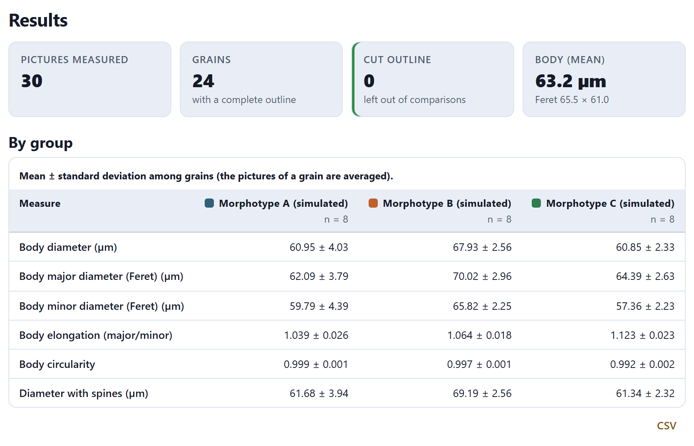
If any picture had to be enlarged to reach the common pixel (its native pixel was larger), an amber notice says so: “… had less resolution than the pixel of the analysis and were enlarged: their fine measures (spines, lumina) are less reliable.” If any has a cut outline, another notice asks you to check them below. With the example neither appears.
The By group table puts one group in each column, with its number of grains below the name (n = 8 in the example), and one measure in each row, under the heading Measure: the mean ± standard deviation of the six measures of Table 3.1. That way it fits on the screen even with many groups. Its caption says so: “Mean ± standard deviation among grains (the pictures of a grain are averaged).” The pictures of each grain are averaged first, and then the mean and the deviation are computed among grains: the standard deviation is the variation among grains, not among pictures. The CSV button downloads the table as palynopro_size_by_group.csv, with one row per group and a mean column and a deviation column for each measure.
The example is drawn with known parameters (Section I.7), so the table can be read against them. Morphotype B has the largest body, 67.93 µm; A and C measure almost the same (60.95 and 60.85 µm) and do not separate by diameter. They do separate by shape: C is drawn with a minor/major ratio of 0.90, that is, an elongation of about 1.11, and the app measures 1.123; A (0.97) and B (0.95) come out at 1.039 and 1.064. The circularity of all three exceeds 0.99 because all three bodies are smooth: elongation and circularity measure different things.
Body diameter by group is a box plot with the grains as points on top: the box runs from the first to the third quartile, the line is the median and the whiskers reach the most extreme data within 1.5 times the interquartile range. Feret diameters of the body places each grain with its major Feret on the horizontal axis and its minor Feret on the vertical one, with an ellipse enclosing 95% of each group. A round grain falls near the diagonal; an elongated one, below it.
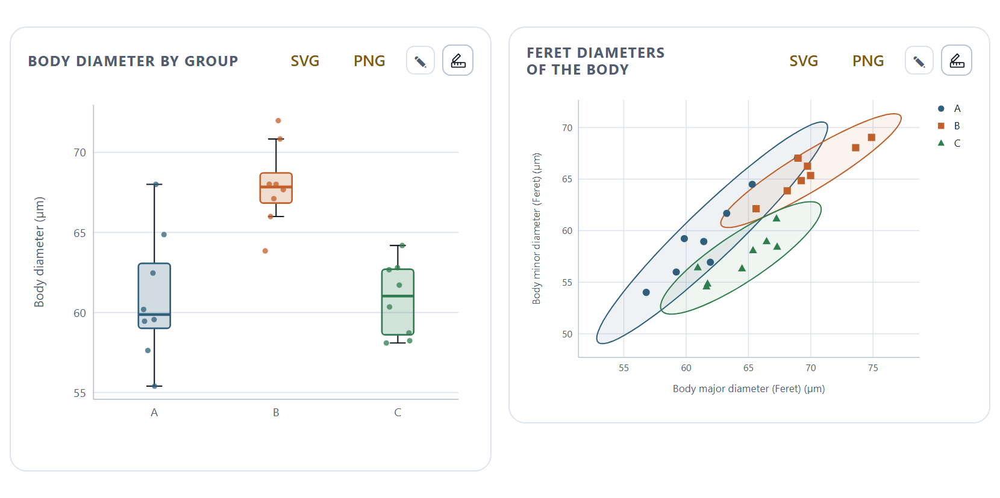
No number is worth more than the outline it comes from. The Check of every picture card draws over each image what the app measured, so you can verify, picture by picture, that the grain, the body and the spines are the ones you would have traced.
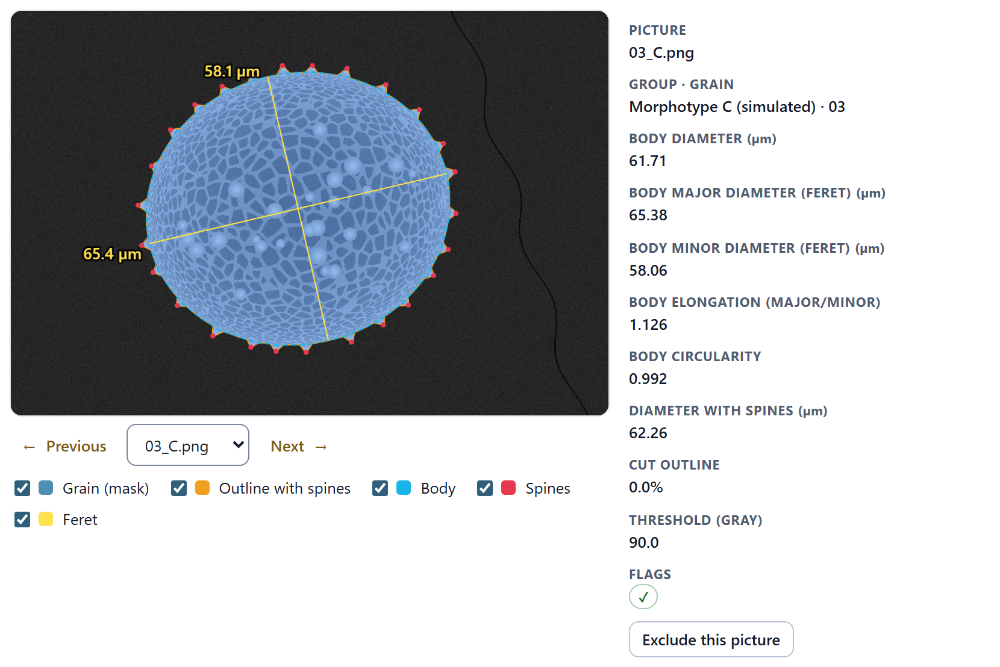
1 2 3 4 503_C.png, a grain of morphotype C, with every layer on, including Feret. Its body measures 61.71 µm, with Feret diameters of 65.38 × 58.06 µm and an elongation of 1.126; no part of the outline is cut. The numbers match the list below.| Layer | What it draws |
|---|---|
| Grain (mask) | Tints blue the pixels the threshold took as grain. If the blue patch spills beyond the grain or has pieces missing, the threshold did not separate grain and background well. |
| Outline with spines | The radial profile, in orange: the silhouette with its spines. |
| Body | The outline of the body, in light blue and dashed: it should run along the base of the spines. |
| Spines | A red dot at the tip of each counted spine. |
| Feret | Off on opening. The two Feret diameters, in yellow, with their length in µm written next to one end, always inside the picture. |
Directions with a cut outline are always marked with small white squares on the edge, whatever layer is on. The data on the right end with the Cut outline as a percentage, the Threshold (gray) chosen by Otsu (between 89 and 91 in the pictures of the example; 90.0 in Figure 3.4) and the Flags: a check mark if the picture is fine, cut outline or enlarged if not.
Grain 3 of morphotype C was photographed twice, 03_C.png and 03a_C.png, with different noise and a different rotation. Its body measures 61.71 µm in both pictures (61.708 and 61.715 in the table of every picture), and both count 26 spines. In the table by group they count as a single grain, with the average of the two: that is why morphotype C has 10 pictures and n = 8.
Exclude this picture takes the picture out of the study: its measure is erased, it disappears from the table and the figures, and the comparison of Block 6 is erased so that you compute it again. Use it with a picture that is truly useless—a broken grain, two grains stuck together, a blurred picture—not with one that gives a number you do not like. With the example, excluding 03_C.png brings the Pictures measured tile down to 29, but Grains stays at 24, because grain 3 of C keeps its other picture.
The excluded picture does not vanish from the viewer: it stays in the selector as “03_C.png — excluded”, and you can view it with its layers to decide; in the data on the right, instead of the measures, it reads Status: “Excluded: it does not enter the analysis.”. The button changes to Include again, which measures it again on the spot, with the same settings as the others, and reports “Picture included and measured”; the others need not be measured again. There is one exception: the common pixel (Section 3.1) depends on the included pictures, and if excluding or including one shifts it, the notice says “The common pixel of the analysis changed: measure every picture again.”; then press Measure every one-grain picture again. You can also exclude or include pictures in Block 2, with the Exclude column of the table of images.
Below the viewer, the drop-down Table of every picture has one row per picture with Picture, Group, Grain, the six measures, Cut (%) and Flags. The rows of pictures left out of the comparisons are highlighted; a click on a row brings that picture into the viewer. Its CSV button downloads palynopro_measurements_by_picture.csv, with the 19 variables of the app (the ornamentation ones too) and a usable column that is 1 or 0.
If you opened a saved project without opening the folder of images again, the measures are still there but the viewer says “Open the folder again to see the picture.”: the project stores references, not the pictures (Section I.5).
| If the blue mask covers the grain and nothing else, and the light-blue body runs along the base of the spines… | then the picture is well measured; move on to the next one. |
| If the body “eats” broad undulations of the outline, or leaves spines inside… | adjust the Largest base of a spine (µm) (smaller in the first case, larger in the second) and measure again. |
| If the picture carries the cut outline flag… | the grain touches the edge or the caption: it does not enter the comparisons. If the cut is small and you are sure of the shape, you can raise the acceptable percentage; if not, photograph the grain again, centered. |
| If the picture carries the enlarged flag… | the body size is still reliable, but the spines and lumina less so; prefer pictures at higher magnification or a coarser pixel of the analysis. |
| If the mask takes in a neighboring grain, dust or a stain on the background… | exclude the picture, or crop it outside the app and open it again. |
The check is the only guarantee that a number comes from a well-read grain. With dozens of pictures, step through them all with Next →: it takes a few minutes.
The button is disabled. There are no included one-grain pictures: open your images in Block 2 and check that they are not all marked as Overview or Detail. “No recognizable grain”. The picture is almost uniform, very dark, or the grain is darker than the background; look at it in the Block 2 viewer. Sizes come out doubled or halved. The calibration is wrong: check the magnification and the Width of the reference frame (mm) in Block 2, and that the scale bar is not flagged as doubtful. Two pictures of the same grain count as two grains. The name does not let the grain be read: correct the Pattern of the name (group and grain) or put the grain column in the index. Grains are missing from the table. Their pictures have a cut outline or are excluded: look for them in the selector, with ⚠ or with “— excluded”.
Two grains of the same size can be told apart by their surface: how many spines show on the outline and how tall they are, how open the mesh of the reticulum is and how rough the surface looks. This block presents those measures, which come out of the same pass as Block 3, and lets you adjust how the lumina are found.
Block 4 has no button to measure: the ornamentation is measured in the same pass as the outline, when you press Measure every one-grain picture in Block 3. If you come here before measuring, the block shows only a box that explains this and a button to go and measure.
The subtitle of the block is “Spines on the outline, lumina of the reticulum and texture of the surface.” The drop-down How it is measured explains the three groups of measures in one paragraph each; here they are in more detail.
The spines come from the radial profile of Block 3 (Section 3.1): the height of each direction above the body is the difference between the outline and the body. A peak of that difference is a spine if it stands out more than the Least height of a spine (µm) and is narrower than the Largest base of a spine (µm); two peaks closer than half a base count as one, the taller. Spines that fall in directions with a cut outline, or next to them, are not counted.
The height of each spine is measured from the tip to the chord joining its two feet: the foot on each side is the lowest point of the outline between the tip and the place where the outline meets the body again. Measuring it this way, and not over the trimmed body, matters in elongated grains: there the body slopes under the spine, and the chord follows that slope. Five measures come from the spines:
| In the app | What it is |
|---|---|
| Spines on the outline | How many spines show on the silhouette |
| Mean spine height (µm) | The mean height of their tips, each over the chord between its two feet |
| Spacing between spines (µm) | The free perimeter of the body (without the cut part) divided by the number of spines |
| Spine density (/100 µm) | Spines per 100 µm of free perimeter of the body; unlike the number, it does not depend on the size of the grain |
| Spine area / body area | How much the spines add to the area of the silhouette, as a fraction of the body area: it sums up their number, height and width at once |
Spines pointing toward the detector look like dots on the face of the grain and are not part of the silhouette: they are not counted. The number is therefore comparable between groups photographed in the same way, but it is not the total number of spines on the grain. To compare grains of different sizes, density is better than number.
In a reticulate grain, the lumina—the cells of the reticulum—look darker than the muri that surround them. The app looks for lumina in the inner part of the body, away from its edge (it leaves out the outer 18% of the radius, where the surface is seen edge-on), with a local threshold along the lines of Niblack (1986): a pixel is lumen if it is darker than the mean of its neighborhood by more than a certain number of standard deviations of that neighborhood. Each cluster of dark pixels that does not touch the border of that zone, between 0.05 and 12 µm², is a lumen; larger dark patches, such as the apertures, are left out by their size. Three measures come from them:
Texture is measured in the same inner zone with the gray-level co-occurrence matrix (Haralick et al. 1973): how often one gray level appears next to another at a given distance. The app reduces the grays to 32 levels between the 1st and 99th percentiles of the zone, counts the pairs at 0.2 and 0.4 µm in four directions (0°, 45°, 90° and 135°), only when both pixels lie on the surface, and averages the eight matrices.
| In the app | Rises when… |
|---|---|
| Texture: contrast | neighboring pixels differ a lot in gray: a rough surface or one with marked meshes |
| Texture: homogeneity | neighbors are alike: a smooth surface or one with a coarse pattern |
| Texture: entropy | the combination of grays is varied and hard to predict |
| Texture: correlation | the gray of a pixel predicts that of its neighbor: broad light and dark zones, such as large cells |
The app also computes Texture: energy, which rises on uniform surfaces; it does not appear in the tables of this block, but it is among the variables of Block 6 and in the CSV of every picture.
The Lumina card holds the two parameters of the local threshold. Those of the spines are in Block 3, because they also decide where the body is.
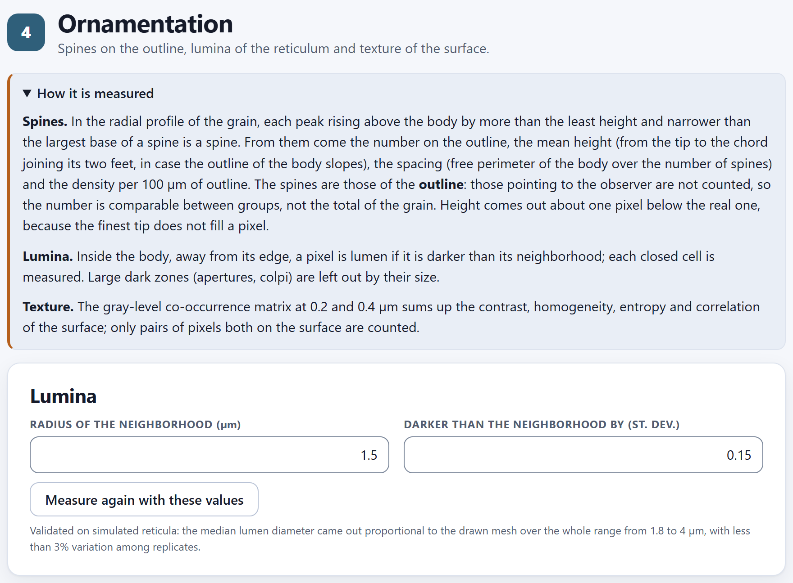
| Field | Default | What it decides |
|---|---|---|
| Radius of the neighborhood (µm) | 1.5 | The size of the square each pixel is compared with; never less than 2 pixels. It should be somewhat larger than half a lumen: that way the neighborhood spans murus and lumen at once. |
| Darker than the neighborhood by (st. dev.) | 0.15 | How much darker than the mean of the neighborhood a pixel must be to count as lumen. Higher, smaller and fewer lumina; lower, noise creeps in. |
The values are applied with Measure again with these values, which goes to Block 3 and measures every picture again (with the example, some 20 to 30 s). Like any new measurement, it erases the comparison of Block 6.
The note at the foot of the card tells how it was validated: “Validated on simulated reticula: the median lumen diameter came out proportional to the drawn mesh over the whole range from 1.8 to 4 µm, with less than 3% variation among replicates.” “Proportional” is not “equal”: Section 4.3 explains why.
With the example, changing the Radius of the neighborhood (µm) from 1.5 to 2.5 and measuring again barely moves the lumina: the Lumen (median) tile stays at 1.53 µm and the density goes from 25.5 to 25.2 per 100 µm²; by group, the median diameter goes from 1.272 to 1.275 µm in A, from 1.429 to 1.434 in B and from 1.876 to 1.890 in C. The threshold is robust as long as the neighborhood spans one cell and its murus; if your lumina are much larger than those of the example, raise the radius in proportion.
The Results card begins with four tiles, all of them means over the grains with a complete outline, all groups together: Spines on the outline (per grain (mean)), Spine height, Spine density (per 100 µm of outline) and Lumen (median), with the lumen density below.
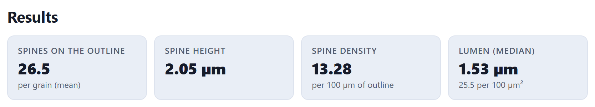
Next comes the By group table, like that of Block 3: one group per column, with its number of grains below the name, and one measure per row, with the mean ± standard deviation among grains. The twelve measures fall into three sections: Spines (the five of Table 4.1), Lumina (the three lumen measures) and Texture (four of the five texture measures). Its CSV button downloads palynopro_ornamentation_by_group.csv, with one row per group.
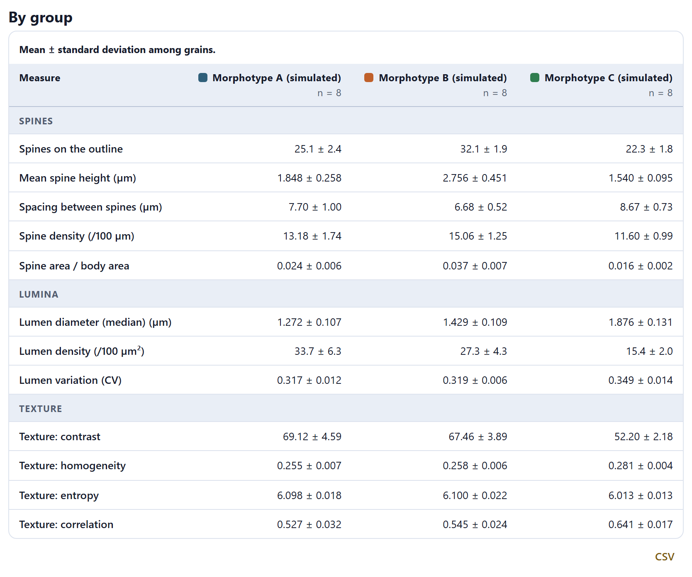
Number of spines. 24, 32 and 22 spines are drawn on the outline of A, B and C (Section I.7), and the app counts 25.1, 32.1 and 22.3 on average. Height. 2.0, 2.8 and 1.7 µm are drawn and the app measures 1.848, 2.756 and 1.540 µm: always somewhat less, by 0.04 to 0.16 µm, on the order of one pixel of the analysis (0.1 µm); in proportion, the difference is largest in C, the one with the shortest spines. Lumen. The drawn mesh is 2.2, 2.6 and 3.4 µm and the median lumen measures 1.272, 1.429 and 1.876 µm: the order is the same and the lumen/mesh ratio is about 0.55 in all three. Texture. C, the one with the most open mesh, has less contrast and more correlation: its light and dark zones are broader.
Height comes out a little low. The tip of a spine is finer than a pixel and does not get past the threshold: the peak of the profile stays below the true tip, and about one pixel of height is lost. In the validation with 60 simulated grains, with spines of 1.2 to 3.2 µm, the measured height fell short of the drawn one by a median of 3.9% (between 2.9 and 5.7%); the loss weighs more, in proportion, when the spine is only a few pixels high or when the spines touch at the base. Compare heights between groups photographed in the same way, and if you give the height in µm, state in the methods that it is underestimated by about one pixel (the Block 7 report says so). The lumen is proportional to the mesh, not equal to it. The mesh runs from the center of one murus to the center of the next; the lumen is only the dark part of each cell, without the muri or the penumbra at its rim. In the validation, the ratio was 0.558 with a variation among grains of 1.8%: constant, so the lumen ranks and compares reticula well.
Three box plots, with the grains as points—Spine density by group, Lumen diameter by group and Spine height by group—and a scatter plot, Texture: contrast against homogeneity, with an ellipse enclosing 95% of each group.
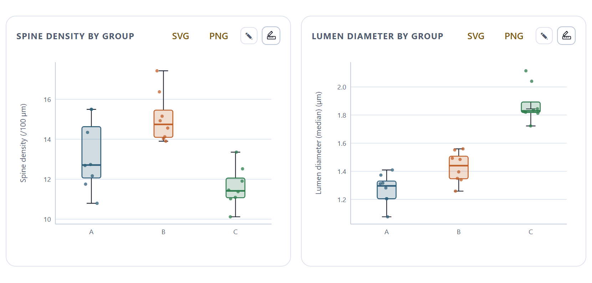
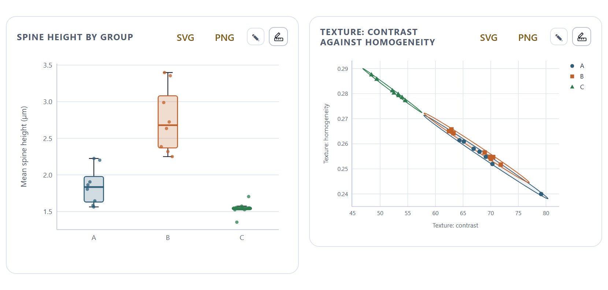
As in Block 3, the Check of every picture card draws over the image what was measured, with ← Previous, the selector and Next → to step through the pictures. It has three layers: Lumina (in green, each measured lumen), Spines (the tips, in red) and Body (in light blue, dashed). On the right are the picture, its twelve ornamentation measures and the Lumina measured. There is no button to exclude here: pictures are excluded in Block 3.
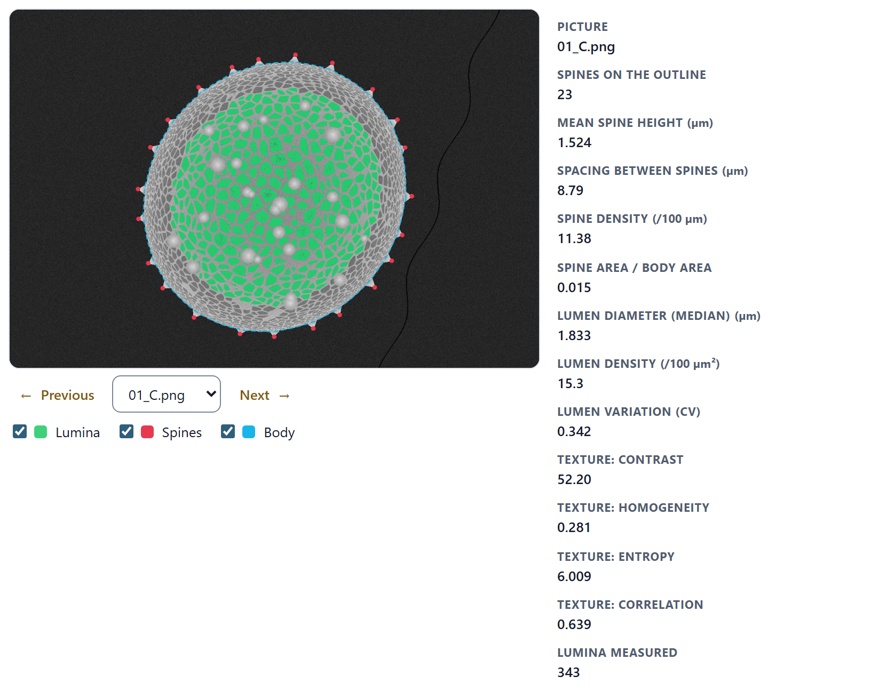
01_C.png, a grain of morphotype C, with an open mesh: the green covers the cells of the interior and leaves out the rim of the body, where the surface is seen edge-on. On the right, its measures: 23 spines on the outline, 1.524 µm high on average; 343 lumina measured, with a median diameter of 1.833 µm and 15.3 lumina per 100 µm².What to look for in the Lumina layer: that the green falls in the cells and not on the muri; that no two cells merge into one large patch; and that no light cells are left unmarked. Missing lumina at the rim of the grain are expected: that zone is not analyzed.
Below the viewer, Radial profile of the chosen picture shows the outline as the app reads it: the Direction from the center (°), from 0 to 360, on the horizontal axis, and the Radius (µm) on the vertical one. The thin line is the Outline, with the spines as peaks; the thick dashed one, the Body left after trimming them; the circles, the counted Spines. It is the most direct way to see why a peak was or was not counted.
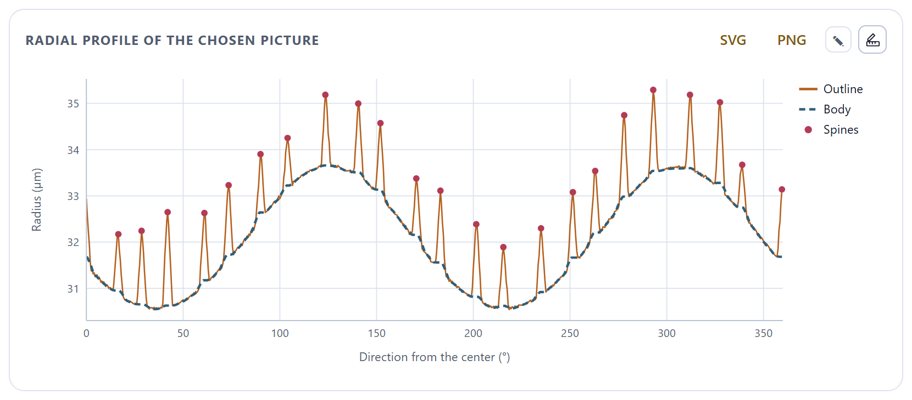
01_C.png. The body rises and falls twice around the circle, between about 30.6 and 33.7 µm of radius: it is the trace of an elongated grain (its two ends and its two sides). The 23 spines are the narrow peaks, 1 to 2 µm above the body; the line passes through all 720 directions, so each circle falls right on the tip of its peak. The height of each spine is measured from that tip to the chord between its two feet (Section 4.1).| If the groups differ in size… | then compare the Spine density or the spacing, not the number: a larger grain has more spines on the outline even if its ornamentation is the same. |
| If a clear peak in the profile has no circle… | it is lower than the Least height of a spine (µm) or wider than the base: adjust those fields in Block 3. |
| If small waves of the edge are counted as spines in the profile… | raise the least height, or check whether the picture has strong noise or is enlarged. |
| If the Lumina layer marks the muri or merges cells… | change the Darker than the neighborhood by (st. dev.) or the radius, and measure again. |
| If you want to report a spine height in µm… | remember that the app underestimates it by about one pixel (3 to 6% in spines many pixels high, more in short ones); for comparing groups it is fine as it is. |
On surfaces that are not reticulate (psilate, verrucate), the lumina found are specks of noise: do not use those variables in Block 6.
The block only says “First measure the grains”. Measure in Block 3; if you already measured and changed something in Block 2, the measures were erased. No lumen, or the density blank. The picture has too little resolution for the reticulum (enlarged flag), the surface is not reticulate or the grain is so small that no inner zone is left. Far too many spines. The outline is rough because of noise: raise the Least height of a spine (µm). Heights change when the pixel of the analysis changes. That is expected: with a coarser pixel the tip is lost more; use the same pixel throughout the study.
A well-formed grain is turgid and almost convex; an empty or aborted one folds. In the overview pictures, with many grains at once, this block separates every grain, measures how convex its body is and estimates, by group, the proportion of collapsed grains with its confidence interval, and whether that proportion differs between groups.
The block works only with the pictures that Block 2 has as Overview: shots at low magnification with many grains. Its subtitle sums it up: “Turgid and collapsed grains in the overviews, by group.” The drop-down How it is estimated explains the method; these are its steps.
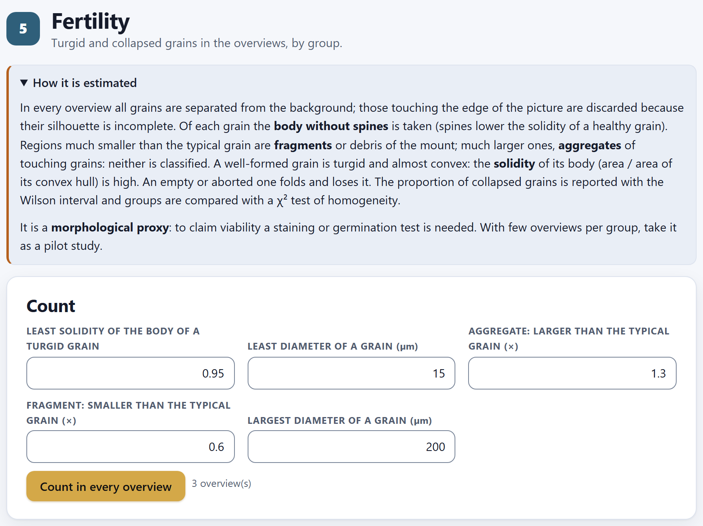
The convex hull is the shape a rubber band stretched around the body would make (the app computes it with Andrew’s 1979 algorithm). In a convex body, such as a circle or an ellipse, the band touches the whole edge and the solidity is 1. A grain that empties caves in on one side: the band skips over the hollow and the area left between the two lowers the solidity. That is why solidity picks out a folded grain even if it is the same size as a healthy one, and does not penalize a grain merely for being elongated. The turgid grains of the example have a solidity of 0.99 or more.
Solidity is a morphological proxy. A turgid grain may not be viable, and preparation for the electron microscope (drying, the vacuum) may collapse grains that were. To claim viability you need a staining or germination test. The block serves to compare groups treated in the same way and, with few overviews, take it as a pilot study. The app reminds you of this in the results.
The Count card has five fields and the button Count in every overview. Next to it, a line tells how many overviews there are; if there are none, it says “There are no overviews: mark them as “Overview” in Block 2.” and the button is disabled.
| Field | Default | What it decides |
|---|---|---|
| Least solidity of the body of a turgid grain | 0.95 | The cut between turgid and collapsed. It is conservative: it recognizes most folded grains without taking a healthy one for collapsed. |
| Least diameter of a grain (µm) | 15 | Smaller regions are ignored: dust, noise. |
| Aggregate: larger than the typical grain (×) | 1.3 | From how many times the typical diameter a region is taken as an aggregate. |
| Fragment: smaller than the typical grain (×) | 0.6 | Below how many times the typical diameter a region is taken as a fragment. |
| Largest diameter of a grain (µm) | 200 | Larger regions are ignored: stains on the stub, clumps. |
Fit the minimum and the maximum to the pollen you study: they must keep all the grains in and the debris of the mount out. When you press the button, the waiting window tells which overview is being counted; with the three of the example, it takes a few seconds. If an overview cannot be read, an amber notice names it.
The Results card begins with four tiles:
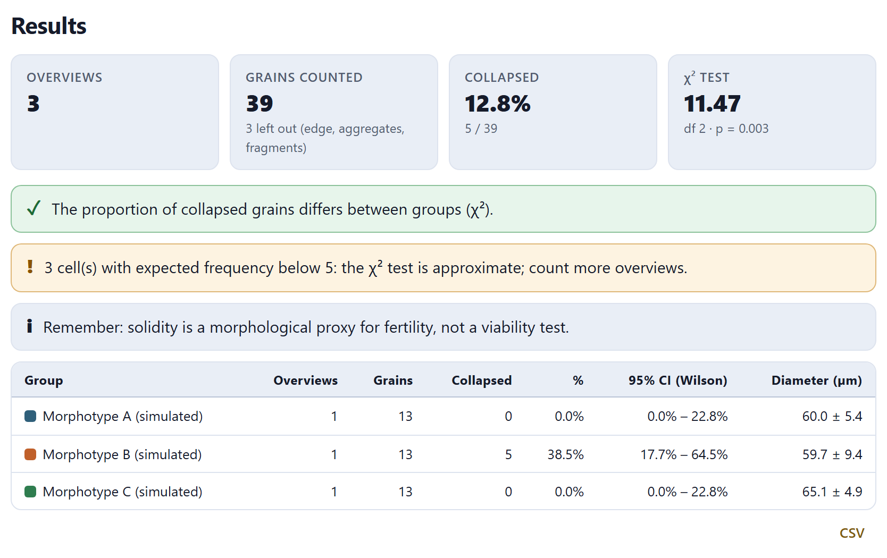
Below the tiles come up to three notices. The first gives the conclusion of the test: “The proportion of collapsed grains differs between groups (χ²).” if p < 0.05, or “No difference between groups was detected in the proportion of collapsed grains (χ²).” if not. The second appears when any expected frequency is below 5—with the example, “3 cell(s) with expected frequency below 5: the χ² test is approximate; count more overviews.”. The third is always there: “Remember: solidity is a morphological proxy for fertility, not a viability test.”
One row per group with Overviews, Grains (those classified), Collapsed, the %, the 95% CI (Wilson) and the Diameter (µm) of the classified grains, mean ± standard deviation. The CSV button downloads palynopro_fertility.csv, with the proportion and the limits of the interval as fractions. With the example, the table is the one in Figure 5.2: B has 5 collapsed out of 13 (38.5%, with an interval from 17.7 to 64.5%), and A and C, 0 out of 13 (from 0.0 to 22.8%).
Wilson (1927). With 13 grains, a proportion of 0 out of 13 does not mean that the group has no collapsed grains: only that none was seen. The Wilson interval gives the range of proportions compatible with what was counted—from 0 to 22.8% for 0 out of 13—and, unlike the “textbook” interval (the proportion ± 1.96 standard errors), it does not go beyond 0 to 100% or shrink to zero when there are no collapsed grains. χ² of homogeneity. The table of groups × (turgid, collapsed) is compared with the one that would be expected if all groups had the same proportion; the degrees of freedom are the number of groups minus one. The χ² approximation calls for expected frequencies of at least 5: with 5 collapsed among 39 grains, each group of 13 would “expect” fewer than 2, hence the notice.
The diameter in this table does not replace that of Block 3: it is measured at low magnification (0.67 µm/px in the example) and includes the collapsed grains, which are smaller; that is why the deviation of B is larger. Besides, in the example the grains of the overviews are drawn almost round, without the elongation of each morphotype, and that of C comes out larger than in the one-grain pictures. Use it only to check that pollen of the expected size was counted.
The example draws each grain of the overviews as collapsed with a given probability—15, 35 and 10% in A, B and C (Section I.7)—so the count in each overview is not exactly that percentage: in those of the example 1, 7 and 1 collapsed grains out of 14 were drawn, counting those that touch the edge. With the threshold of 0.95, the app recognizes 5 in B—of the other two, one touches the edge and the other reaches 0.962 (Figure 5.4)—and none in A or C, where the least solid grain reaches 0.958 and 0.968. This is how the results change as you move the Least solidity of the body of a turgid grain:
| Least solidity | A | B | C | Collapsed | χ² (2 df) | p |
|---|---|---|---|---|---|---|
| 0.93 | 0 | 3 | 0 | 7.7% | 6.50 | 0.039 |
| 0.95 (default) | 0 | 5 | 0 | 12.8% | 11.47 | 0.003 |
| 0.96 | 1 | 5 | 0 | 15.4% | 8.27 | 0.016 |
| 0.97 | 1 | 6 | 1 | 20.5% | 7.86 | 0.020 |
The conclusion—B has more collapsed grains than A and C—holds in all four cases; the percentages do not. That is why you should report the threshold along with the result (the Block 7 report does) and look at the histogram: if there is a clear gap between the healthy and the folded grains, the threshold can go in it.
Collapsed grains by group gives the percentage of collapsed grains in each group as bars, with the Wilson interval as a whisker. Solidity of the body of the grains is a histogram of the solidity of all classified grains, between 0.75 and 1, with a vertical line at the threshold: the grains to its left are the collapsed ones.
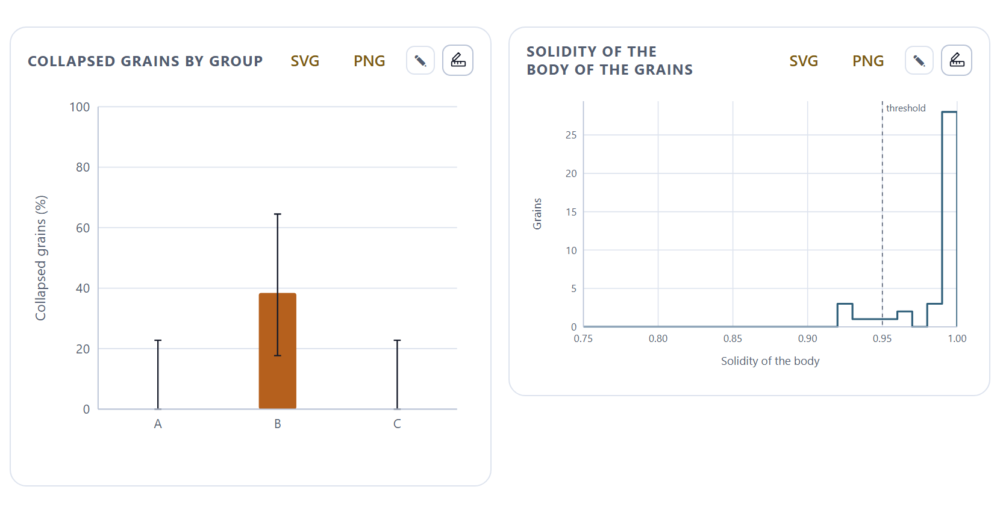
The Check of every overview card draws a circle around each region found, in the color of its class, with its solidity written to three decimals above the grain or, if the grain is next to the top edge, below it; always inside the picture. The overviews are chosen in the selector. The color key goes below the image:
| Color and label | What it means |
|---|---|
| green · turgid | Body solidity equal to or greater than the threshold |
| red · collapsed or misshapen | Solidity below the threshold |
| violet · aggregate (not counted) | Larger than the typical grain by the aggregate factor |
| yellow · fragment (not counted) | Smaller than the typical grain by the fragment factor |
| gray · touches the edge (not counted) | Incomplete silhouette |
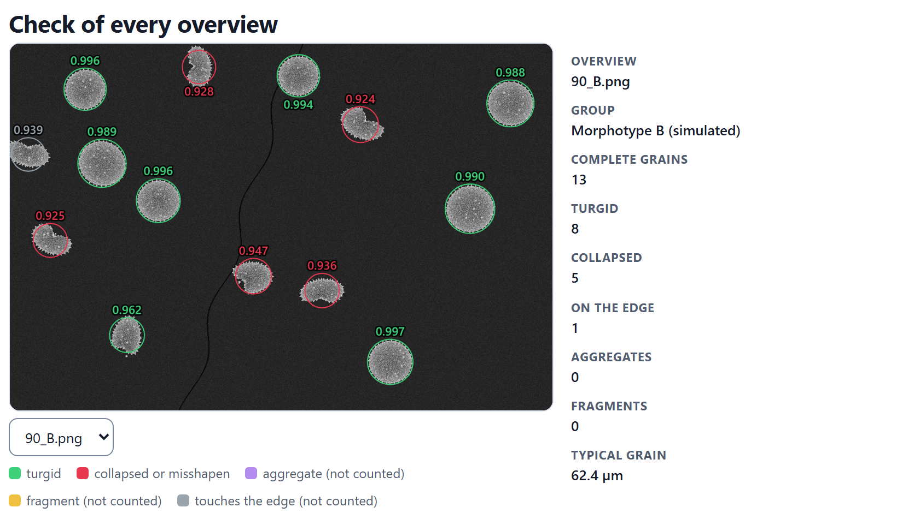
90_B.png of morphotype B: 13 complete grains, 8 turgid (green) and 5 collapsed (red), with solidity from 0.92 to 0.95; the one at the left edge (gray, 0.94) is folded too, but it touches the edge and is not counted. The typical grain measures 62.4 µm. Note the green grain marked 0.96, at the lower left: it has a notch and is folded, but its solidity passes the 0.95 threshold. It is the one added to B when the threshold is raised to 0.97 (Section 5.3).On the right are the Overview, the Group, the Complete grains (those classified), how many are Turgid and how many Collapsed, how many were On the edge, how many Aggregates and Fragments, and the Typical grain in µm against which they were judged. In the overview of morphotype A, for instance: 13 complete grains, all 13 turgid, 1 on the edge and a typical grain of 60.8 µm.
| If p < 0.05 and there is no notice of small frequencies… | then the proportion of collapsed grains differs between groups; look in the table and the bars to see which one stands apart. |
| If p < 0.05 but the notice of expected frequencies below 5 appears… | the difference is likely but the test is approximate: count more overviews before claiming it. |
| If the Wilson intervals are wide (more than 30 points)… | there are few grains per group; the percentage is imprecise even if the test comes out significant. |
| If the check shows folded grains in green… | raise the least solidity a little; if there are healthy grains in red, lower it. Look for the gap in the histogram. |
| If two grains stuck together come out green or red, or a healthy one violet or yellow… | adjust the aggregate and fragment factors. |
Always report the solidity threshold and the number of grains per group, and call the result “collapsed grains”, not “inviable pollen”.
The button is disabled. There are no overviews: mark them in the Kind column of the table of images in Block 2. Many grains left out. The overviews are so crowded that the grains touch (aggregates) or reach the edge: take less crowded fields. The fragments are genuinely small grains. If your sample mixes grains of very different sizes, the typical grain does not represent them all: lower the fragment factor or separate the overviews by group. All grains come out collapsed. Otsu’s threshold also took in part of the background, or the grains are out of focus: check the picture in the Block 2 viewer.
The question behind almost every pollen study: can the groups be told apart by their pollen? The block answers it at three scales—variable by variable, with all the variables at once, and grain by grain, like a key—and always with the grain as the unit, so that a grain photographed twice neither counts double nor helps itself to be classified.
Block 6 works with what Block 3 measured—the outline, the size and, in the same pass, the ornamentation of Block 4; it does not read the images again. Under the title, the app says what it does: “Can the groups be told apart by their pollen? With the grain as the unit.” It has a drop-down, What is computed, the Variables card with the button that runs the analysis and, once computed, five result cards: In short, By variable, Principal components, PERMANOVA and Pollen key: classifying a grain. Every figure in this chapter comes from the simulated example measured with the default values and compared with the default settings.
Before any test, the app merges the pictures of each grain into a single row: the average of its measurements. Everything else—the tests, the components, the PERMANOVA and the classifiers—is done with those grains, not with the pictures.
The What is computed drop-down sums it up in one paragraph. Step by step, this is what the app does when you press Compare the groups:
03_A.png and 03a_A.png are grain A·03). If a grain lacks any of the chosen variables, it is left out, and the app says so next to the button (Section 6.2).While it computes, the “Comparing the groups” wait window says which step it is on: Tests by variable, Principal components, PERMANOVA, Discriminant analysis, Random forest (validation by grain) and Importance of the variables. With the example it takes a few seconds.
Two pictures of the same grain are not two independent observations: they look alike because they are the same grain. If they counted separately, the tests would believe they had more data than there are and would give p-values that are too small (what statistics calls pseudoreplication). And in the validation of a classifier, a picture would be classified with the help of its twin, which sits in the training set, and the accuracy would come out inflated. Averaging by grain and leaving out the whole grain avoids both traps. In the example, six grains (grains 3 and 6 of each morphotype) have two pictures: 30 pictures are 24 grains.
The Variables card decides which measurements enter the multivariate analysis and sets the three numbers that govern the random parts. Below it is the Compare the groups button.
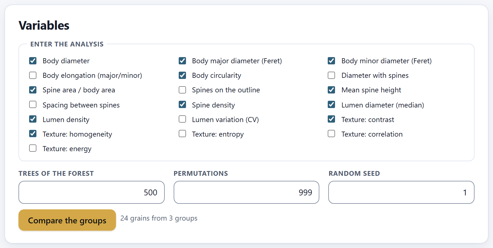
The Enter the analysis box has one checkbox for each measurement produced by Block 3 or 4. When the app opens, eleven are checked, chosen so that the analysis does not repeat information:
| Checked by default (11) | Unchecked (8) |
|---|---|
| Body diameter · Body major diameter (Feret) · Body minor diameter (Feret) · Body circularity | Body elongation (major/minor) · Diameter with spines |
| Spine area / body area · Mean spine height · Spine density | Spines on the outline · Spacing between spines |
| Lumen diameter (median) · Lumen density | Lumen variation (CV) |
| Texture: contrast · Texture: homogeneity | Texture: entropy · Texture: correlation · Texture: energy |
Those left out are, almost all, combinations of others: elongation is the ratio of the two Feret diameters; the diameter with spines is, roughly, the body plus two spine heights; the number of spines and their spacing follow from the density and the perimeter; texture entropy and energy almost always go hand in hand with homogeneity. You can check or uncheck any you like—the app asks for at least two—and the choice is saved in the project. If you measure again in Block 3, the choice is kept, but the result is cleared and you have to compare again.
Linear discriminant analysis estimates a covariance matrix with as many rows as there are variables. With few grains per group and many checked variables the matrix becomes nearly singular, and the app stabilizes it with a small correction (a ridge of 0.001) so it can go on; the accuracy then depends more on the chance of sampling. As a guide, try to have more grains in the smallest group than checked variables. The example has 8 grains per group and 11 variables, right at the limit: that is why the leave-one-grain-out validation matters so much.
| Field | Default | What it does |
|---|---|---|
| Trees of the forest | 500 | Trees of the whole random forest, from which the importance of the variables and the out-of-bag error come. Fewer than 50 is raised to 50. In the leave-one-grain-out validation, each model uses at most 300 trees, so that the computation does not drag on: it is one forest per grain. The app says so in the tiles of Section 6.7 and in the methods of the report. |
| Permutations | 999 | Permutations of the PERMANOVA, global and pairwise. Fewer than 99 is raised to 99. With 999, the smallest possible p-value is 1 / (999 + 1) = 0.001. |
| Random seed | 1 | The starting point of the random number generator for the permutations and the forest. The same seed always gives the same result; an empty field or a zero goes back to 1. |
To the right of the button, the app says how many grains and groups it will work with (“24 grains from 3 groups” in the example); if there are no measurements yet, it says “First measure the grains in Block 3.” and the button is disabled. If, on comparing, some grain was left out because it lacked a chosen variable (for example, with no lumina measured), the line adds: “… · 2 without a value in some chosen variable: left out”. This does not happen with the example.
Six tiles and a few verdicts that answer, at a glance, whether the groups differ and whether a single grain is enough to recognize its group.
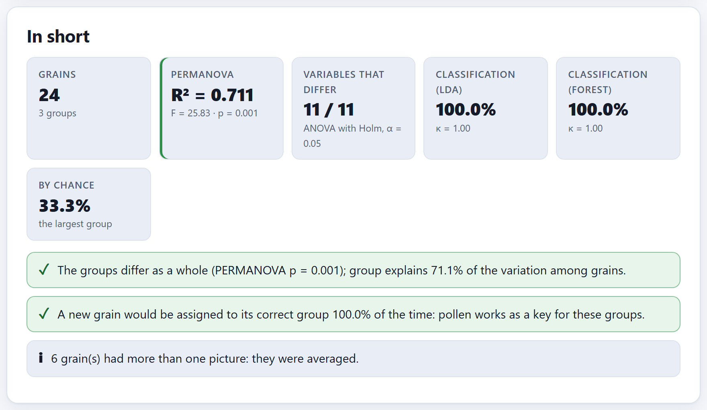
| Tile | Example | What it is |
|---|---|---|
| Grains | 24 · 3 groups | The grains (not the pictures) that entered the analysis, and the groups. |
| PERMANOVA | R² = 0.711 · F = 25.83 · p = 0.001 | The global test of Section 6.6. The tile carries a green stripe if p < 0.05. |
| Variables that differ | 11 / 11 | How many variables have a significant analysis of variance after Holm’s adjustment (α = 0.05). |
| Classification (LDA) | 100.0% · κ = 1.00 | The accuracy of linear discriminant analysis leaving out one grain, with Cohen’s κ. |
| Classification (forest) | 100.0% · κ = 1.00 | The same with the random forest. |
| By chance | 33.3% | The accuracy of someone who assigned every grain to the largest group: the yardstick for the two above. With three groups of 8 grains, 8 / 24. |
Below the tiles, the app writes out in words what they mean. The rules are fixed:
A table with one row per variable: the mean and standard deviation of each group with its Tukey letter, and the three tests. Below it, the figure of the variable that best separates the groups.
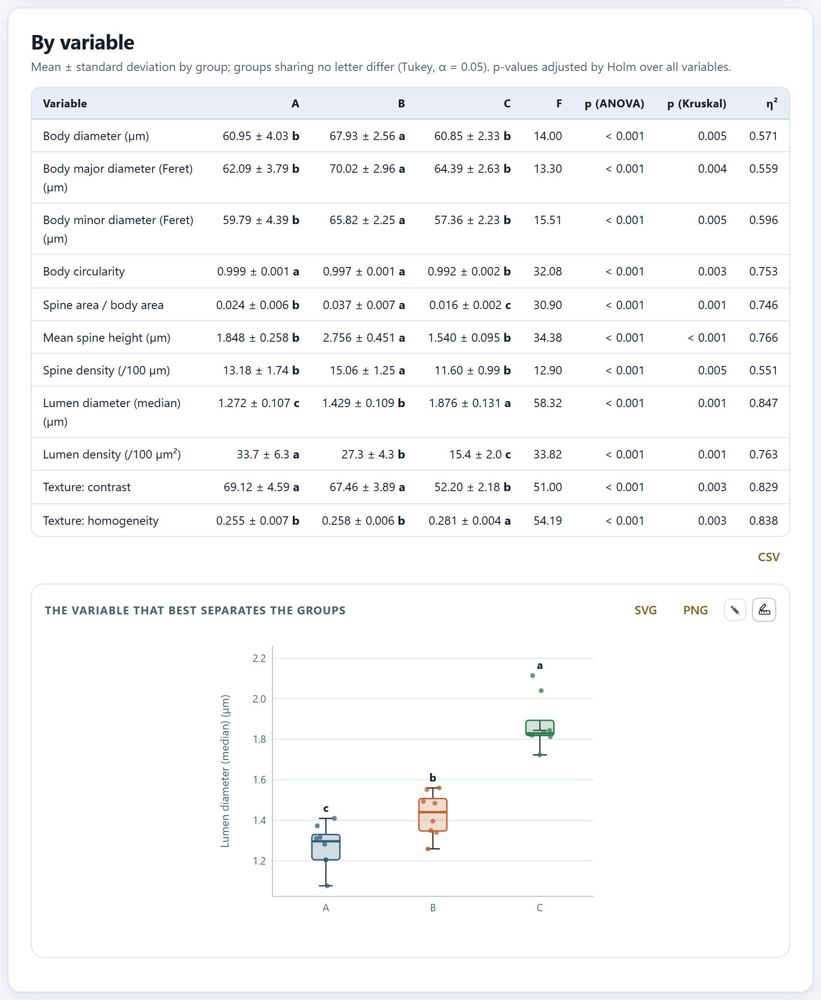
The note on the card sums it up: “Mean ± standard deviation by group; groups sharing no letter differ (Tukey, α = 0.05). p-values adjusted by Holm over all variables.” The columns are:
| Column | What it is |
|---|---|
| Variable | The name of the measurement, with its unit. |
| One per group (A, B, C) | Mean ± standard deviation among the grains of the group and, in bold, its letter. Letter a goes to the group with the highest mean; two groups that share a letter do not differ according to Tukey’s test (with the Tukey–Kramer correction if the groups have different numbers of grains). |
| F | The statistic of the one-way analysis of variance: how much more the means vary between groups than the grains within each group. |
| p (ANOVA) | The p-value of the analysis of variance, already adjusted by Holm over all the variables; “< 0.001” if it is smaller. |
| p (Kruskal) | That of the Kruskal–Wallis test, which compares ranks instead of means and does not assume normality; also adjusted by Holm. |
| η² | The proportion of the variation of the variable explained by group (the between-group sum of squares divided by the total): an effect size that does not depend on the number of grains. |
With 11 variables and α = 0.05, if the groups did not differ at all you would expect one of them to come out significant just by chance. Holm’s adjustment (1979) corrects the p-values across variables: it sorts the p-values from smallest to largest and multiplies the first by 11, the second by 10, and so on, without letting them decrease. Tukey’s letters (1949) correct within a variable, across the pairs of groups. A variable can have a significant F and still two groups with the same letter: the groups differ as a whole, but not that pair.
All 11 variables have p (ANOVA) < 0.001. Reading the letters shows what separates whom. Morphotype B is the largest: Body diameter 67.93 ± 2.56 µm, letter a, against 60.95 ± 4.03 (A) and 60.85 ± 2.33 µm (C), which share b; it also has the tallest spines (2.756 ± 0.451 µm, a, against 1.848 for A and 1.540 µm for C, which share b) and the densest (15.06 ± 1.25 per 100 µm). Morphotype C stands apart by its reticulum: larger lumina (1.876 ± 0.131 µm, a), fewer lumina per area (15.4 ± 2.0 per 100 µm², c), a more homogeneous, lower-contrast texture, and a slightly less circular body (0.992 ± 0.002, b). A and B differ only in size, spines and reticulum, not in texture: they share the letter in contrast and in homogeneity. Compare it with what was drawn (Section I.7): B is drawn with the larger body and the taller spines, and C with the more open mesh.
The CSV button downloads the table as palynopro_by_variable.csv, with the numbers unrounded: one row per variable, with its internal key in variable (such as corp_d) and its name with the unit in nombre (“Body diameter (µm)”), and, for each group, the columns A_media, A_de and A_letra (mean, standard deviation and letter); then F, p_anova_holm, H, p_kruskal_holm and eta2.
The box plot on the card shows the variable with the largest F, with each grain as a point, the box from the first to the third quartile with the median, the whiskers, and the Tukey letter above each group. It changes by itself if you change the chosen variables: it is always the one with the largest F among those that entered.
A two-dimensional map of the grains that summarizes all the variables at once, with arrows that show where each one grows. It is for seeing the structure—which groups separate, which overlap, which variables go together—not for testing anything.
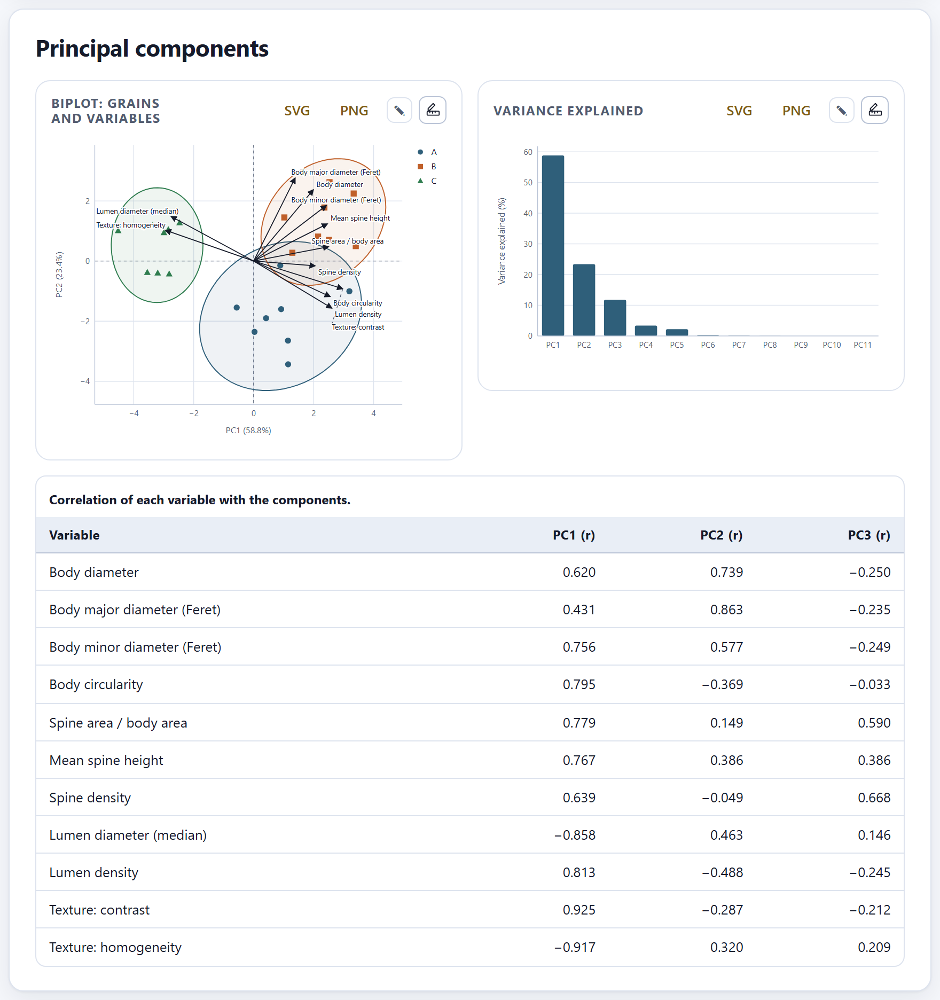
With the variables standardized, principal component analysis (Pearson 1901; Hotelling 1933) looks for new axes, combinations of the original variables, that are uncorrelated with each other: the first (PC1) captures the largest possible variation, the second (PC2) the largest of what remains, and so on. The app computes them from the eigenvalues and eigenvectors of the correlation matrix, by Jacobi rotations. There are as many components as variables (11 in the example), and their eigenvalues add up to 11: a component with an eigenvalue greater than 1 summarizes more than a single variable.
Each point is a grain, with the shape and color of its group, and each group has its 95% ellipse. The arrows are the variables: the tip sits at the correlation of the variable with PC1 (horizontal) and with PC2 (vertical), so they point where the variable grows and their length tells how well the plane represents it. Two arrows close together are variables that go hand in hand; opposite ones, that one rises when the other falls. The axes carry the percentage of variance of each component: “PC1 (58.8%)” and “PC2 (23.4%)”.
Each arrow carries the name of its variable, in the language of the interface (without the unit). In the example, the arrows of the reticulum and the texture are spread along PC1: Texture: contrast and Lumen density to the right and slightly down, Lumen diameter (median) and Texture: homogeneity to the left, right where the grains of morphotype C are. Those of size (Body major diameter (Feret), Body diameter, Body minor diameter (Feret)) and Mean spine height rise toward the right, toward the grains of B. Those of A lie at the lower right: they are the smallest and those with the densest lumina.
One bar per component with the percentage of the total variation it explains. It is the scree plot: when the bars stop dropping sharply, the components that follow are noise. In the example, PC1 explains 58.8%, PC2 23.4% and PC3 11.8% (eigenvalues 6.47, 2.57 and 1.29): the first three, the only ones with an eigenvalue greater than 1, add up to almost 94%, and from PC6 on the bars can hardly be seen.
Under the figures, “Correlation of each variable with the components.”: one row per variable with its correlation (r) with PC1, PC2 and PC3. An |r| close to 1 says that the component is, to a large extent, that variable. In the example, PC1 is mostly texture and reticulum (contrast 0.925, homogeneity −0.917, lumen diameter −0.858, lumen density 0.813); PC2, size (major Feret 0.863, body diameter 0.739); and PC3, the spines (spine density 0.668, spine area 0.590).
Principal component analysis does not use the group of each grain: it looks for variation, wherever it comes from. If the groups separate in the biplot, it is because the largest variation among grains is precisely the one between groups. If they do not separate, they may differ in a direction that explains little variance: the PERMANOVA and the discriminant analysis, which do use the group, will tell.
The test of whether the groups differ in the whole set of their measurements, without assuming that the variables follow a normal distribution: the global answer and, with more than two groups, pair by pair.
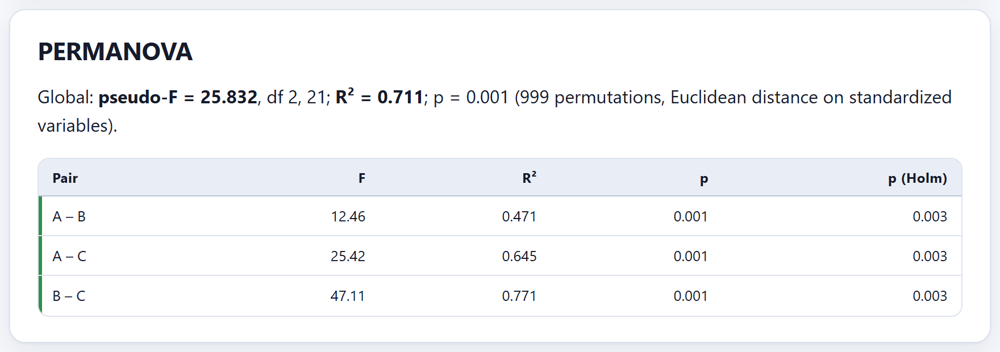
PERMANOVA (Anderson 2001; McArdle and Anderson 2001) is an analysis of variance done with distances. The app computes the Euclidean distance between each pair of grains on the standardized variables, splits the sum of squared distances into a between-group part and a within-group part, and forms a pseudo-F as in an analysis of variance. To know whether that pseudo-F is large, it shuffles the groups among the grains as many times as Permutations says and counts in how many the shuffled pseudo-F equals or exceeds the observed one: p = (those times + 1) / (permutations + 1). R² is the part of the variation among grains that group explains.
The Global line gives the pseudo-F, its degrees of freedom (number of groups − 1 and number of grains − number of groups), R², the p-value, the number of permutations and the distance used. In the example: “pseudo-F = 25.832, df 2, 21; R² = 0.711; p = 0.001 (999 permutations, Euclidean distance on standardized variables)”. The p of 0.001 is the smallest that can be obtained with 999 permutations: no shuffle matched the observed value. To claim a smaller p you have to increase the permutations.
The pairwise table repeats the test for each pair of groups—Pair, F, R², p—and adds p (Holm), adjusted for the number of pairs. Pairs with a Holm p below 0.05 carry a green stripe on the left. With only two groups there is no pairwise table: the global test already is the comparison.
A PERMANOVA can come out significant because the groups sit in different places of the variable space or because one is much more dispersed than another. Look at the biplot and the ellipses: if one group has a much larger ellipse than the others and the centers nearly coincide, the difference is one of dispersion, not of average form. In the example the centers are clearly apart.
The last card answers the practical question: if you were given a single grain, could you tell which group it belongs to from its measurements alone? To find out, it fits two classifiers and measures their accuracy with grains they did not see.
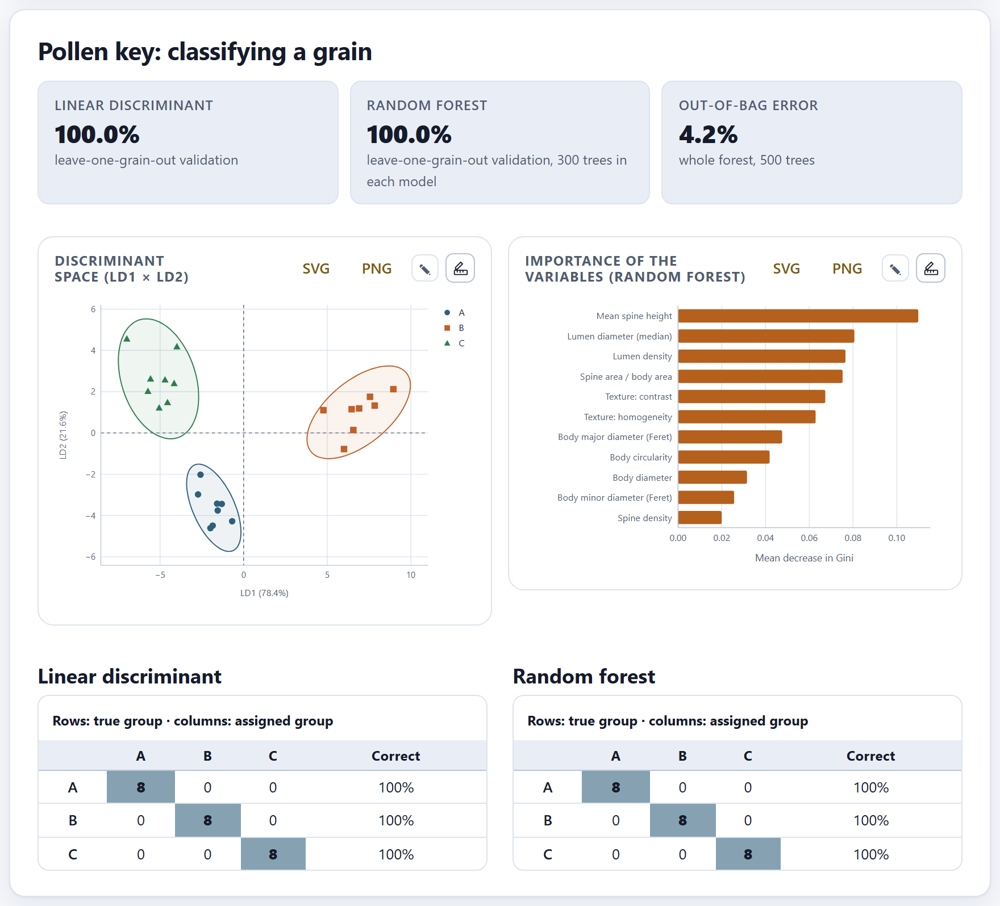
Linear discriminant analysis (Fisher 1936) looks for the combinations of variables that best separate the groups, assuming that all of them share the same covariance matrix, and assigns a grain to the group with the highest posterior probability, with prior probabilities equal to the frequency of each group. The random forest (Breiman 2001) brings together hundreds of decision trees, each fitted with a sample of the grains drawn with replacement and, at each split, with √p variables chosen at random (3 of 11 in the example); each tree votes and the most voted group wins. The discriminant works best when the groups are similar elliptical clouds; the forest assumes no shape at all, but needs more grains. Leave-one-grain-out validation takes out one grain—with all its pictures—, fits the model with the rest (standardizing without it as well), classifies it, and repeats with every grain. What you get is the accuracy to expect for a new grain; Cohen’s κ (1960) discounts the agreement you would get by chance: 1 is perfect agreement and 0, that of chance.
The grains on the first two discriminant axes, with the 95% ellipse of each group. Each axis carries the percentage of the separation between groups that it captures: “LD1 (78.4%)” and “LD2 (21.6%)” in the example. Unlike the biplot, these axes are chosen to separate the groups, so the figure shows the best separation possible with linear combinations; with three groups there are two axes. The grains are drawn with the model fitted to all the grains; the accuracy in the tiles, in contrast, comes from the validation. With two groups there is a single axis, and instead of the figure the app says “With two groups there is a single discriminant axis.”
One bar per variable with the mean decrease in Gini impurity: how much, on average, each variable helps make the splits of the trees of the whole forest purer. The bars are horizontal, with the name of each variable on the left, from the most important at the top to the least important at the bottom. In the example the most important is Mean spine height (0.110), followed by Lumen diameter (median) (0.081), Lumen density (0.077) and Spine area / body area (0.075); the least, Spine density (0.020). Importance tells what the forest uses, not which variable differs most: two highly correlated variables share the importance between them.
One per classifier, Linear discriminant and Random forest, with the caption “Rows: true group · columns: assigned group”. The diagonal holds the correct assignments, shaded with the primary color; off it, the errors, in the accent color. The last column, Correct, is the percentage of grains of each group assigned correctly. In the example, both matrices have 8, 8 and 8 on the diagonal and zeros off it (Correct 100% in each group). When a classifier makes mistakes with your data, look at which groups the errors fall between and compare it with the pairwise PERMANOVA: you would expect the most similar pairs to be confused (in the example, A–B).
With the 11 default variables, the PERMANOVA says that the morphotypes differ as a whole (R² = 0.711, p = 0.001) and pairwise; the discriminant and the forest correctly classify 100% of the grains they did not see (κ = 1.00 in both), against 33.3% by chance, and the out-of-bag error of the forest is 4.2%. The app concludes that “pollen works as a key for these groups”. For a manuscript you would write: “The three morphotypes differed in their pollen morphology (PERMANOVA: pseudo-F = 25.83, R² = 0.71, p = 0.001); in leave-one-grain-out cross-validation, every grain was assigned to its morphotype, both by linear discriminant analysis and by random forest (κ = 1.00).” Remember that these are simulated data: the example was drawn so that the groups could be told apart.
The app treats each grain as independent. If your grains come from few plants, the grains of one plant resemble each other more than those of another, and the tests overstate the evidence in the same way repeated pictures would. If you can, photograph grains from several plants per group and check, with the per-picture measurement table of Block 3, that the variation among plants does not dominate. The app does not model that second level.
| If the PERMANOVA gives p < 0.05 and classification is 80% or more… | the groups can be told apart by their pollen and a single grain is enough to recognize them: pollen is a good key for them. |
| If the PERMANOVA gives p < 0.05 but classification falls below 80%… | the groups differ on average, but they overlap: pollen serves to characterize them, not to identify a single grain. Check in the confusion matrix which pairs are confused. |
| If the PERMANOVA is not significant… | with these variables and these grains there is no evidence of a difference. Before concluding that they do not differ, check how many grains each group has. |
| If the PERMANOVA gives p = 0.001 with 999 permutations… | report “p ≤ 0.001”; for a finer value, increase the permutations. |
| If a variable has a significant F and two groups share a letter… | that variable separates some groups, not that pair. |
| If the discriminant and the forest give very different accuracies… | with few grains, trust more the one with the higher κ and the out-of-bag error; with groups of very irregular shape, the forest. |
These are guides for interpretation, not laws: the sampling design—how many plants, how many flowers, how many grains per plant—weighs more than any p-value.
The Compare the groups button is disabled and says “First measure the grains in Block 3.”: there are no measurements; go to Block 3 and press Measure every one-grain picture. “Choose at least two variables.” Check two or more boxes. “At least two groups with three grains or more are needed.” After averaging by grain and removing the pictures with a cut outline, fewer than two groups with three grains remain; check in Block 2 that the group and the grain were read correctly (a wrong name pattern can put all the grains in one group or give all of them the same grain number). A group does not appear. It had fewer than three grains, and the app says so in a verdict. “… without a value in some chosen variable: left out”. Those grains lack some of the checked variables (for example, a grain with no lumina measured); uncheck that variable or check the picture in Block 4. The results disappeared. You measured again or changed the calibration, a group or an exclusion: the block is cleared so as not to show stale results; compare again. On opening a project there are no results. The project saves the measurements and the settings, not the comparison, and the app reminds you of this when opening it: press Compare the groups again and it will come out the same, because the seed is saved too.
The end of the journey: what goes into the thesis, the paper or the lab notebook. The block assembles into a single document the material, the methods written out with the parameters you used and their citations, the tables, every figure, one measured grain per group, the limitations and the references. This chapter also explains the figures—their downloads, the studio and the ✎ editor—and how to save the project to pick it up again.
Block 7 has two cards: Details of the report, with the fields and the buttons, and Preview, which appears when you make the report. Under the title, the app sums it up: “Methods, results, figures and gallery in one document to print or save as PDF.” Nothing is computed here for the first time: the report takes what Blocks 2 to 6 already computed, with the settings you left in each one. The screenshots in this chapter were taken with the simulated example measured, counted and compared, with the title “Pollen morphometry of the simulated example”.
Four text fields for the cover of the report, the language it is written in, and a list that says which parts of the study are already computed.
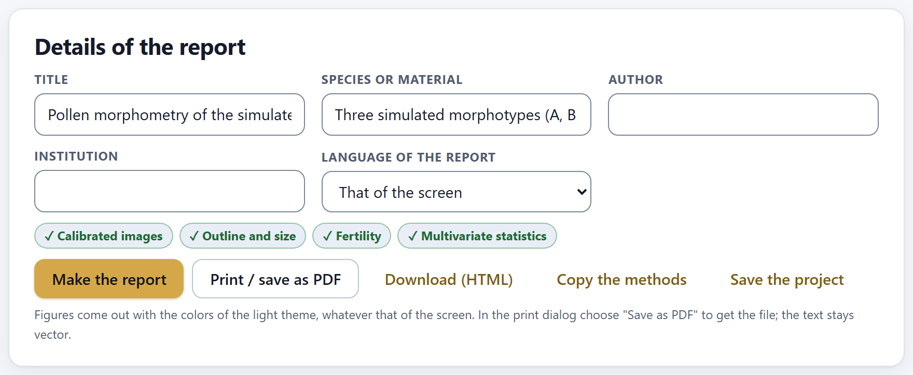
| Field | What it holds |
|---|---|
| Title | The title of the report. Empty, it shows “Pollen morphometry of …” as a hint, and the report comes out as “Quantitative pollen morphometry”. It also names the files you download. |
| Species or material | What was studied; on the cover of the report it appears as “Material”. |
| Author | Who did the study. |
| Institution | The laboratory or the institution. |
| Language of the report | That of the screen (on opening), Español or English. It changes the language of the report and of the copied methods, not that of the interface. |
The four texts and the language of the report are saved in the project and return to their fields when you open it; texts you leave empty do not appear on the cover. Without a project, every time you open the app the language starts at That of the screen.
Below, four badges say what is there: Calibrated images (Block 2), Outline and size (Block 3), Fertility (Block 5) and Multivariate statistics (Block 6). Each carries a green check mark if its part is computed, or a dot if not. If anything is missing, the app adds: “What is missing appears in the report as "not computed"; you can make it anyway.” This is normal when the study has no overviews: the report comes out without fertility.
Five buttons: one assembles the report, three take it out of the app, and the last one saves the project.
| Button | What it does |
|---|---|
| Make the report | Assembles the document with whatever there is at that moment (the “Putting the report together” wait goes through Gallery and Figures) and shows it in the Preview. With no images open it warns “First open your images.” When it is made, the block is marked as done in the block bar. |
| Print / save as PDF | Opens the browser’s print dialog with the report alone, without the interface. For a PDF, choose Save as PDF as the destination: the text stays vector and can be searched and copied. The page is A4, with margins of 16 mm at top and bottom and 15 mm at the sides. |
| Download (HTML) | Saves the report as a page that opens offline in any browser, with the figures and the gallery pictures inside. It is named after the title, without accents and with underscores: Pollen_morphometry_of_the_simulated_example.html in the example, or palynopro_report.html without a title. |
| Copy the methods | Puts the text of the methods (Section 7.3) on the clipboard, unformatted and with a blank line between paragraphs, ready to paste into a manuscript; the app confirms “Methods copied”. |
| Save the project | The same as Ctrl + S (Section 7.5). It is the only button that works before the report is made. |
The three output buttons are disabled until you make the report. Under the buttons, a note recalls two things: “Figures come out with the colors of the light theme, whatever that of the screen. In the print dialog choose "Save as PDF" to get the file; the text stays vector.”
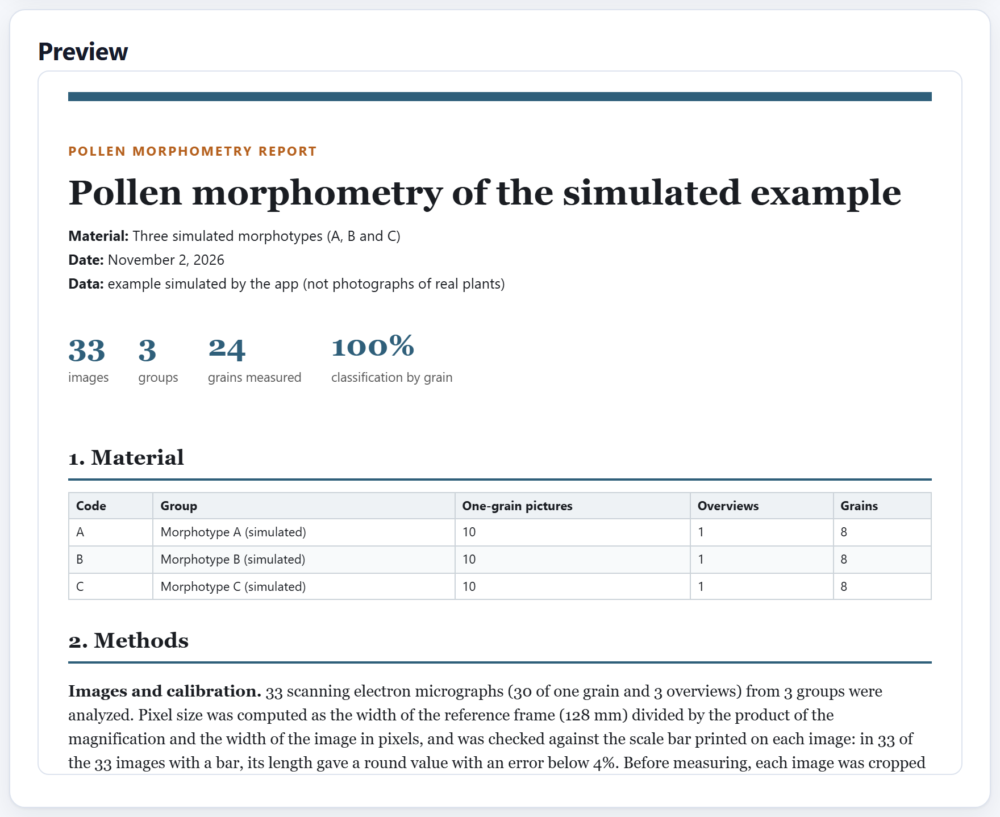
The preview is a snapshot of the study at the moment you pressed Make the report. If you then change a title, a group, a variable of Block 6 or measure again, the report you see—and the one you print or download—is still the old one. Press Make the report again before printing.
A cover and nine numbered sections, always in the same order. Whatever is not computed appears as “Not computed.”; nothing is made up.
At the top, the heading “Pollen morphometry report” and the title. Below, the material, the author and the institution if you wrote them, the date of the day (such as “November 2, 2026”) and, if the study is the example, the simulated-data note. Four figures close the cover: the images analyzed, the groups, the grains measured and, if there are statistics, the accuracy of the classification by grain (the better of the two classifiers, without decimals). In the example: 33 images, 3 groups, 24 grains measured and 100%.
| Section | What it contains |
|---|---|
| 1. Material | One row per group: Code, Group (the name in the Groups card of Block 2), One-grain pictures, Overviews and Grains. In the example, each morphotype has 10 one-grain pictures (8 grains, two of them photographed twice) and 1 overview. |
| 2. Methods | The paragraphs written out with the parameters used (below). |
| 3. Size and ornamentation by group | Mean ± standard deviation among grains of ten fixed variables: body diameter, major and minor Feret, elongation, circularity, spines on the outline, mean spine height, spine density, lumen diameter and lumen density, with the number of grains in each group. |
| 4. Comparison between groups | The table of Block 6 with the variables chosen there (mean ± standard deviation with its Tukey letter, F and the Holm-adjusted p) and a paragraph with the PERMANOVA and the two classifiers, with κ and the chance accuracy. |
| 5. Fertility | By group: overviews, grains counted, collapsed grains, percentage and 95% Wilson interval, and the χ² test. |
| 6. Figures | All the figures of Blocks 3 to 6, numbered, in two columns (the wide ones span both), as vectors and with the colors of the light theme. With the example there are 14. |
| 7. Measured grains, one per group | A picture of each group with the outline with spines, the body and the spine tips drawn over it, its name and its body diameter. |
| 8. Limitations | Five fixed caveats about what the method cannot tell. |
| 9. References | The 22 works of the methods and the citation of the program, in alphabetical order. |
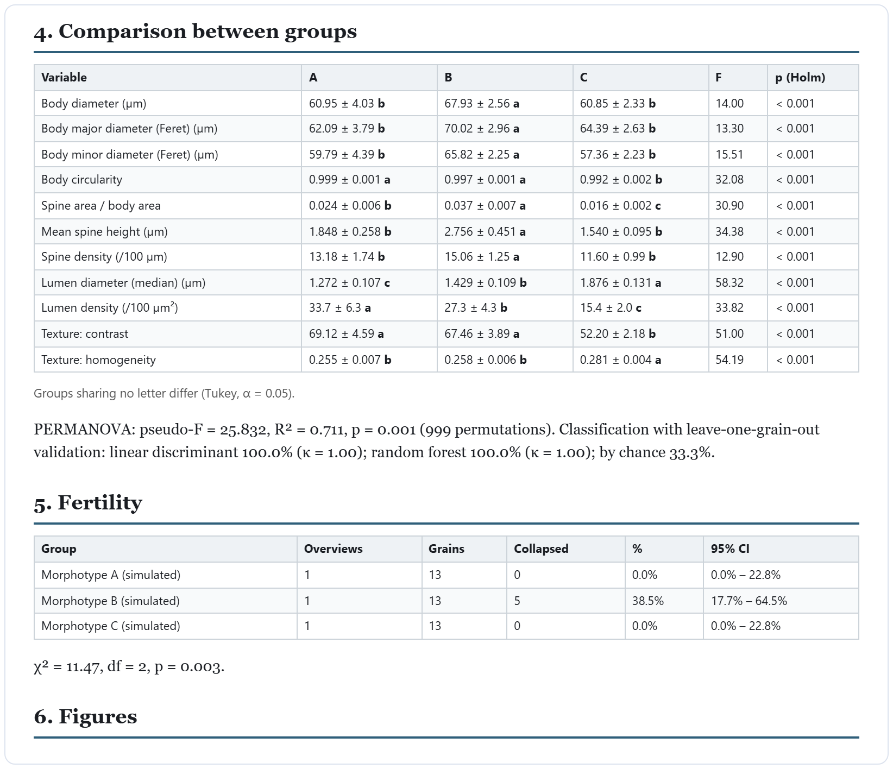
Section 2 is the most useful part of the report: a draft of the methods that writes down what was really done, with the numbers you used and each method cited to its source. It has up to six paragraphs:
The app writes how things were measured, not what it cannot know: the origin of the material, how many plants and flowers were sampled, how the grains were prepared (acetolysis, dehydration, sputter coating), and the microscope, voltage and detector. Add that, remove what you will not report and adapt the wording to the journal. Report also the spine-height limitation of Section 8 (below): it is part of the method.
The gallery takes, from each group, the first one-grain picture that is included, measured, free of warnings (cut outline or enlarged) and open in the session, and draws it with the outline with spines, the body and the spine tips, as in the review of Block 3. In the example they are 01_A.png (body 59.6 µm), 01_B.png (72.0 µm) and 01_C.png (64.2 µm). If you opened a project without opening the folder of the pictures again, it says instead “The images are not open in this session.”
The limitations are fixed, because they belong to the method, not to your data: the body and the spines are measured on the two-dimensional silhouette; the Feret diameters amount to the polar and equatorial axes only in equatorial view; spine height, measured from the tip to the chord joining its two feet, comes out about one pixel short, because the finest tip of the cone does not fill a pixel (with simulated grains at 0.1 µm per pixel, by 3 to 6%, median 4%; more for short spines or spines touching at the base); fertility by solidity is a morphological proxy, not a viability test; and images enlarged to the common pixel give less reliable fine measurements.
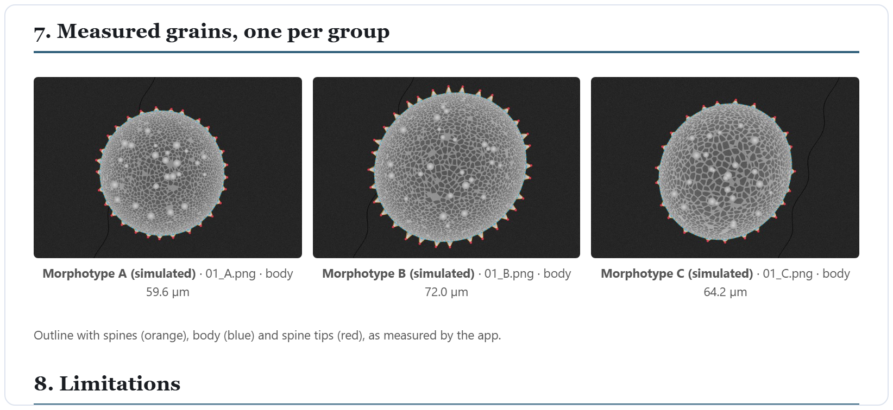
Every figure of Blocks 3 to 6 has the same four tools in its header: two quick downloads and two ways of editing it.
The SVG and PNG buttons save files named after the title of the figure, without accents and with underscores (Biplot_grains_and_variables.svg), and they come out with the colors of the light theme even if you work in the dark one: the colors, the lines and the lettering are written inside the file, which does not depend on the app to be displayed. Whatever you changed with the ✎ editor goes inside too, because the editor writes onto the figure itself.
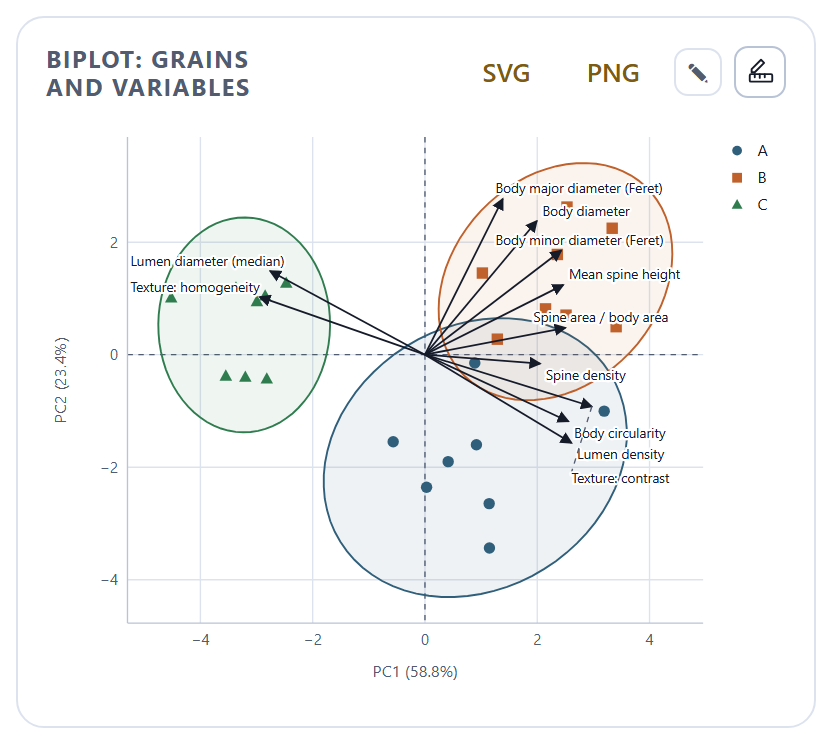
1 2 3 4The button with the ruler and pencil opens the figure studio, the same in every application of the suite. You can also reach it from the search (Ctrl + K): the figures appear among the results and open directly in the studio, or from the In this block index, with the button next to the sections that have figures.
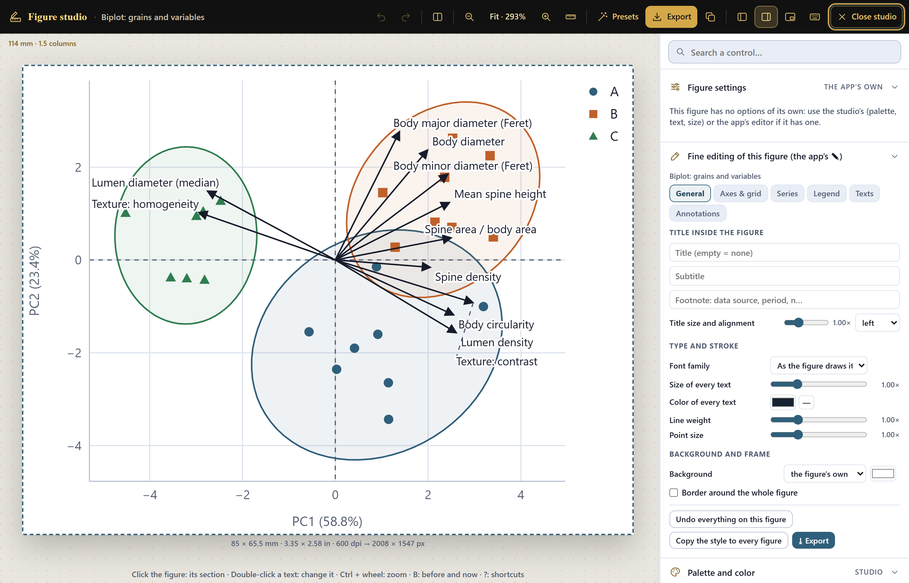
The top bar undoes and redoes, compares before and after with a curtain, zooms the figure in and out (Fit makes it the size of the screen, with the zoom percentage), shows it at actual size, applies one-click Presets (and saves your own), copies the image to the clipboard and, with Export, downloads it at the width of one column, one and a half columns, two columns or a free width, in millimeters or inches, at 300, 600 or 1200 dpi, as PNG, SVG, vector PDF or TIFF, with a white or transparent background. The buttons on the right change the place of the inspector (right, left or floating) and show the shortcuts; Close studio returns to the app with the figure where it was.
The inspector brings together, in collapsible sections, Figure settings (the figures of PalynoPro have no options of their own, and the studio says so), Fine editing of this figure (the app’s ✎), which is the editor below docked, and the studio’s own tools: scientific palettes with color-blindness simulation (Palette and color), text size and line width tuned to the output size, and the legend (inside the plot in eight places, outside, below or hidden; it can also be dragged). Search a control… finds any setting by its name. Double-clicking a text in the figure lets you change it right there. The studio remembers its settings in this browser.
The ✎ button opens, without leaving the page, a floating panel that works on that figure, titled “Edit this figure” with the name of the figure. It has six tabs:
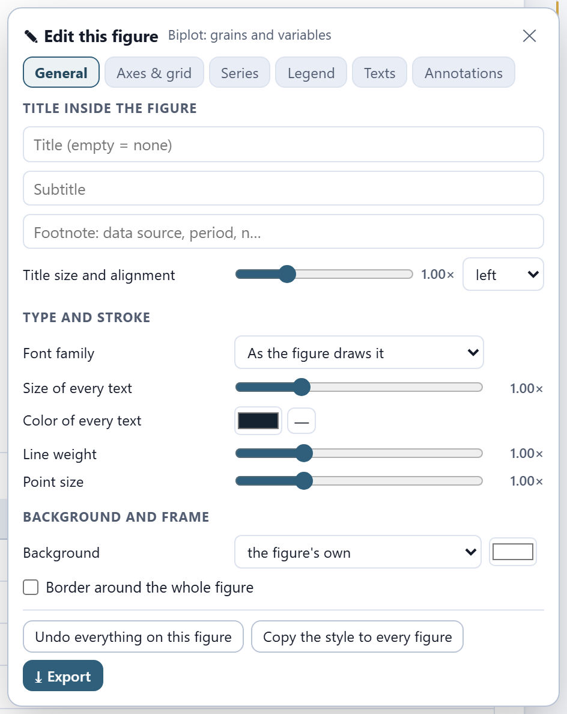
At the foot of the panel, Undo everything on this figure, Copy the style to every figure and Export. The edits are saved figure by figure in this browser, not in the project, and are applied again every time the figure is redrawn—on recomputing, on changing the language or the theme—: texts are recognized by their original wording and colors by their original value. If you open the project on another computer, the figures come out without your edits.
The figures use the fonts installed on your computer; the app downloads none. An SVG you send to someone else may be displayed with a similar but different font on their computer. For it to look the same everywhere, export it as vector PDF or PNG from the studio.
The project is a small .json file with everything needed to see the results again and repeat the analysis, except the pictures.
It is saved with Ctrl + S from any block or with Save the project in Block 7. The file is named after the title of the report followed by .palynopro.json (project.palynopro.json if there is no title); the app confirms “Project saved:” with the name and reminds you that it does not carry the results of Block 6 or the ✎ edits. It is opened with Ctrl + O or with Open a project on the home page; the app confirms “Project opened:”, reminds you that “Compare the groups” has to be repeated, and takes you to Block 2.
| Saved | Not saved |
|---|---|
| The details of the report (title, material, author, institution) and its language | The pictures: only their name and a thumbnail |
| All the settings of Blocks 2 to 6, with the chosen variables and the seed (those of Block 6 show in their fields on opening) | The comparison of Block 6: it is repeated identically with Compare the groups |
| The list of images with their group and grain (and whether they came from the index or were typed in the table), their magnification, their calibration (with the replacement of a contradicted pixel size), their bar, their kind, their notes and their exclusions; the names of the groups | The report: it is made again |
| The measurements of each picture (Blocks 3 and 4) and the count of the overviews (Block 5) | The edits of the ✎ editor (they stay in the browser) |
On opening a project, the tables and the figures of Blocks 2 to 5 come back. To see the pictures again, review them on the image or have the gallery of the report, open the same folder in Block 2: the app joins each picture to its row by its name and keeps its groups, calibration, exclusions and results (“… of the project opened again”). Only if the folder brings images that were not in the set does it ask first, because adding them clears the results and you have to measure, count and compare again (Appendix D). Without opening the folder you can consult the tables and the figures; the viewers will say “Open the folder again to see the picture.” With the simulated example, which the app draws, the pictures come back by themselves.
The app saves nothing on its own: every time it opens it starts empty. If you try to close the tab with images open, the browser asks you to confirm. Save the project at the end of each session and, together with it, the folder of the pictures as it was: if you rename a picture, the project no longer finds it.
| If you changed something after making the report… | press Make the report again before printing or downloading. |
| If you use the written-out methods… | complete the material, the sampling, the preparation and the equipment, which the app does not know. |
| If the journal asks for a figure width and resolution… | export from the studio at that width (one column, one and a half, two) and at 300 or 600 dpi, or as vector PDF. |
| If the report goes in another language… | choose English or Español in Language of the report and make it again; for the figures to change language too, change that of the interface (ES · EN). |
| Always… | save the project together with the folder of the pictures: it is the record of how each number was obtained. |
These are guides for handing in, not laws: the instructions of the journal or of your graduate program come first.
“First open your images.” There are no images: open a folder or the example in Block 2. A section says “Not computed.” Its block is missing: measure (Block 3), count (Block 5) or compare (Block 6), and make the report again. Section 6 says “There are no figures yet.” No block has drawn a figure yet. The gallery says “The images are not open in this session.” You opened a project: open the folder of the pictures again in Block 2. The grain of a group is missing from the gallery. All its pictures have some warning (cut outline or enlarged) or are excluded. The methods are not copied. The browser did not allow the use of the clipboard (it happens in some browsers when the app is opened with a double click); download the report as HTML and copy from there. The figures of the report come out in Spanish even though the report is in English. The figures are taken as they are on screen: change the language of the interface and make the report again. “Could not open the project: The file is not a PalynoPro project.” The JSON belongs to another app or is not a project.
What is worth having at hand and did not fit in any chapter: which files the app reads and writes and how it reads them, the rules of the seven blocks gathered in one place, the vocabulary of palynology and statistics used in the manual, what to do when something does not work, the license of the tool with the way to cite it, and the 22 references of the app.
PalynoPro runs in the browser and sends nothing to any server: files come in from your computer and what the app writes goes to your downloads folder. The pictures are never copied: the app keeps a reference to each one while the tab is open.
Everything comes in through Block 2—Choose a folder, Choose files or by dropping onto the Drop a folder or your images here area—except the project. The app recognizes each file by its extension and its content; there is no need to tell it what each one is.
| What | Extension | How it is read |
|---|---|---|
| Micrographs | .tif .tiff .png .jpg .jpeg .bmp .webp .gif | Each image is converted to a single gray channel (0 = black); color images are converted with the weights 0.299, 0.587 and 0.114. TIFF is read by a reader of its own (below); the other formats, by the browser. |
| Microscope file | .txt with the same name as the image | From it the magnification, the pixel size if present, the voltage, the working distance, the date and the instrument are read (below). The text that some instruments write inside the TIFF itself is read the same way if there is no .txt. |
| Index | .csv, .tsv or .txt with a header | One row per image; the columns are looked up by name (below). The first one that has the file column and at least one row is taken. |
| Group key | .txt or .csv | Lines code = name or code: name (below). |
| Project | .json | Open a project on the home page or Ctrl + O. Only a file written by the app, with "app": "PalynoPro"; any other is rejected. It replaces whatever was open (Section 7.5). |
The reader accepts TIFF in strips or in tiles; uncompressed, with LZW (with or without horizontal predictor), PackBits or Deflate; at 1, 8, 16 or 32 bits; in grayscale, with a palette or in color. It does not accept TIFF with the channels in separate planes or other compressions (JPEG inside the TIFF, for example): those pictures are reported as not read. 16-bit images are brought to 8 bits for analysis.
The app recognizes these ways of writing the data, in the .txt or inside the TIFF:
| Line | What is read |
|---|---|
$CM_MAG 1000 | The magnification. With this family of files also $CM_ACCEL_VOLT (voltage), $$SM_WD (working distance), $CM_DATE (date), $CM_INSTRUMENT (instrument) and, if they come together, $$SM_MICRON_MARKER 10um and $$SM_MICRON_BAR 128, from which the pixel size follows (the bar in µm divided by its length in pixels). |
PixelWidth=1.0e-007 | The pixel size, in meters. |
Image Pixel Size = 100 nm | The pixel size, in pm, nm, µm or mm. |
PixelSize=100 | The pixel size, in nm (at the start of the line). |
Magnification=1000 · Mag: x1000 | The magnification, if it was not read before. |
AcceleratingVoltage= · HV= · EHT= | The voltage, in kV (or in V if it says so). |
If the file has none of this, the magnification is typed by hand in the table of Block 2 or given in the index.
The first line is the header. The separator is guessed from it: semicolon if it has more semicolons than commas; otherwise, tab if it has any; otherwise, comma. Quoted fields are respected, the byte order mark at the start is ignored and empty lines are skipped. Headers are compared ignoring case, accents and symbols (Magnificación and magnificacion are the same). Each column is recognized by any of these names:
| Column | Headers that name it |
|---|---|
| File (required) | archivo, file, filename, imagen, image, base_id, id, foto |
| Group | grupo, group, morfotipo, landrace_code, taxon, especie, species, codigo, code, clase, class |
| Group name | nombre, name, landrace_name, nombre_grupo, group_name |
| Grain | grano, grain, unidad, unit, specimen, ejemplar |
| Magnification | magnificacion, magnification, mag, aumento, aumentos |
| Pixel size | um_por_px, um_per_px, micras_por_pixel, pixel_size_um, umpx (in µm) |
| Exclude | excluir, exclude, excluded, descartar; counted as yes: 1, si, yes, true, x, excluir, exclude |
| Note | nota, note, notas, notes, comentario |
| Kind | nivel, tier, tipo, kind; in Spanish or in English: a value with “pano”, “over”, “campo” or “field” is an overview, with “det” a detail, and any other (un grano, one grain…) one grain |
Each row is joined to its image by the file name, with or without extension. What the index brings prevails over what is read from the name (group and grain), also if you later change the name pattern (B.1); the magnification of the index is used only if the microscope file did not give it, and a pixel size in the index takes precedence over the magnification (B.1). Decimals may use a point or a comma (0,1), but with a decimal comma separate the columns with semicolons or tabs. The index that Block 2 itself downloads comes back in complete:
archivo;grupo;nombre;grano;magnificacion;excluir;nota 01_G1.tif;G1;Group one;01;1000;; 02_G1.tif;G1;Group one;02;1000;1;broken grain 90_G1.tif;G1;Group one;90;150;;overview
A text file with one line per group, A = Morphotype A, G1 = Group one or G1: Group one. The code is a single word of letters and digits, 1 to 8 characters long, which may contain hyphens or underscores (- or _) inside: A, G1, M12, P3b, Lin-2. A group that is not in the key is named by hand in the Groups card of Block 2 or with the name column in the index.
Without an index, the group and the grain come from the file name with the Pattern of the name (group and grain) of Block 2, a regular expression with two named parts: (?<grain>…) and (?<group>…). The default, ^(?<grain>\d+)[A-Za-z]*_(?<group>[A-Za-z]+\d*), reads 07a_G1.tif as grain 07 of group G1: the letters after the grain number mark a repeated picture of the same grain. If the pattern has no names, the first and second parentheses are used as grain and group.
| Block | File | What it contains |
|---|---|---|
| all | <title>.palynopro.json (Ctrl + S) | The project: details of the report and its language (reportLang), settings, list of images with their calibration (with the rounded bar, nice, and the mark of a replaced pixel size, replaced), where their group and grain came from (groupFrom, grainFrom: from the index or from the table) and their exclusions, measurements and count of the overviews (Table 7.2). It does not carry the results of Block 6. Without a title, project.palynopro.json. |
| 2 | palynopro_index.csv | One row per image: archivo, grupo, nombre, grano, magnificacion, ancho_px, um_por_px, fuente, barra_px, barra_um, nivel, excluir, nota (file, group, name, grain, magnification, width in pixels, µm per pixel, source, bar in pixels, bar in µm, kind, exclude, note). The source (by hand, index, instrument, magnification, not calibrated) and the kind (one grain, overview, detail) are in the language of the interface. It can be opened again as an index, in either language. |
| 3 | palynopro_size_by_group.csv | By group: grupo, nombre, n_granos and, for each outline measurement, its mean and standard deviation (corp_d_media, corp_d_de…). |
| 3 | palynopro_measurements_by_picture.csv | By picture: foto, grupo, grano, usable (0 if its outline is cut) and the 19 measurements with their internal key. |
| 4 | palynopro_ornamentation_by_group.csv | By group: the means and standard deviations of the spines, the lumina and the texture. |
| 5 | palynopro_fertility.csv | By group: panoramicas, granos, colapsados, proporcion, ic_inf, ic_sup (Wilson interval), diametro_media and diametro_de (overviews, grains, collapsed, proportion, interval limits, and mean and standard deviation of the diameter). |
| 6 | palynopro_by_variable.csv | By variable: variable (the internal key), nombre (name, with its unit), means, standard deviations and letters of each group, F, p_anova_holm, H, p_kruskal_holm and eta2. |
| 7 | <title>.html | The report (Section 7.3), with the figures and the gallery inside. Without a title, palynopro_report.html. |
| any | <figure title>.svg · .png | Each figure, with the colors of the light theme; the PNG at three times its size. The studio also exports PDF and TIFF at the size and resolution you ask for. |
The names that come from a title are written without accents and with underscores (Pollen_morphometry_of_the_simulated_example.html). All the CSV files use the comma as separator and the decimal point, with unrounded numbers, and are in UTF-8 with a byte order mark so that a spreadsheet reads the accents and the µ. The column headers are the same in both languages, and the measurements go with their internal key (corp_d, sp_h, lum_d…), which does not change with the language; the per-variable CSV of Block 6 also carries the name of each one.
The browser keeps only preferences, not data: the language of the interface, the light or dark theme, the animations, the settings of the figure studio and the edits made with the ✎ editor. To keep a study, save the project.
The rules the app applies to calibrate, measure, classify, warn or decide, with the block where they act and their default values. They are the same ones each chapter explains; here they are together to be consulted at a glance.
| Pixel size | µm/px = width of the reference frame (128 mm = 128,000 µm) ÷ (magnification × width of the image in pixels). With 1000× and 1280 px, 0.1 µm/px; with 150× and 1280 px, 0.6667 µm/px. |
| Order of the sources | From strongest to weakest: the bar measured by hand → the pixel size of the index → the one written by the instrument → the magnification with the reference width → none (the picture stays uncalibrated and out of the comparisons). |
| The scale bar | It is searched for in the bottom 20% of the picture: a rectangle of very light pixels (gray ≥ 235 of 255) between 2% and 45% of the width of the image, repeated with the same start and length (± 2 px) in at least 3 rows, and almost full (95%). If there are several, the longest. |
| Checked bar | Its length times the pixel size must be within 4% of a round length: 1, 2 or 5 × 10k µm (10, 20, 50 µm…). If not, the bar is doubtful. |
| Replacement | If the pixel size of the index or the instrument gives a doubtful bar and the magnification does give a round one, the magnification is used and the app warns about it. The replacement is kept when the calibration is recomputed (on changing a magnification or the reference width) and is saved in the project. |
| Group and grain | From the index or typed in the table, they prevail; otherwise, they are read from the name with the pattern. On pressing Apply with a new pattern, only those that came from the pattern change; the others are changed in the table. |
| The caption | Everything from just above the bar downward is not analyzed (never higher than 60% of the height). Without a bar, a black strip at the bottom is cut if it takes up at least 3% of the height. |
| Kind of picture | By the magnification relative to the median of the set: up to 0.6 times, overview; from 1.8 times, detail; in between, one grain. It can be changed by hand in the table. |
| Pixel of the analysis | Empty, the 90th percentile of the pixel size of the pictures that are not overviews, rounded to two significant digits (0.1 µm in the example): almost no picture has to be enlarged. Those that do are flagged. |
| The grain | Otsu threshold, hole filling, speck removal and closing; the largest region near the center. |
| The outline | The largest distance from the center to the edge in 720 directions (every half degree). |
| The body | Every peak of the profile narrower than the Largest base of a spine (µm) is cut off: 3 µm. |
| A spine | A peak of the profile above the body of at least the Least height of a spine (µm): 0.3 µm. |
| Spine height | From the tip to the chord joining its two feet. It comes out about one pixel shorter than the real one (by 3 to 6% in spines many pixels high with simulated grains, median 4%; more if the spine is short or the spines touch at the base); it is reported in the limitations. |
| Cut outline | If the edge of the picture or the caption cut more than the Acceptable cut outline (%)—2%—of the outline, the picture is flagged and does not enter the comparisons. |
| Excluded picture | It stays in the viewer of the review (“— excluded”) and does not enter the analysis; Include again measures it on the spot. If the common pixel changes with it, the app asks to measure all the pictures again. |
| Enlarged picture | If it had to be enlarged by more than 5% to reach the pixel of the analysis, it is flagged: its fine measurements are less reliable. |
| Lumina | Pixels darker than the mean of their neighborhood (Radius of the neighborhood (µm): 1.5) by more than 0.15 standard deviations; the equivalent diameter of each closed cell is measured and its median is reported. |
| Pictures of the same grain | They are averaged: the grain is the unit. |
| What counts | Complete grains from 15 to 200 µm in diameter; those touching the edge of the picture do not count. |
| Typical grain | The median diameter of the grains not touching the edge; with fewer than three, the median of the body measured in Block 3. |
| Fragment and aggregate | Smaller than 0.6 times the typical grain, fragment; larger than 1.3 times, aggregate. Neither counts. |
| Turgid or collapsed | Turgid if the solidity of the body without spines (area ÷ area of its convex hull) is 0.95 or more; otherwise, collapsed or misshapen. |
| The test | Proportion with its 95% Wilson interval; the groups are compared with a χ² test of homogeneity (they differ if p < 0.05). If any expected frequency is below 5, the app warns that the test is approximate. |
| Minimums | At least two variables; groups with at least three grains (the others are left out); at least two groups. A grain without a value in some chosen variable leaves the analysis, and the app says so next to the button and in the methods of the report. |
| By variable | Analysis of variance and Kruskal–Wallis with Holm’s adjustment over all the variables; Tukey letters (Tukey–Kramer) with α = 0.05; a for the group with the highest mean. |
| Multivariate | Standardized variables; principal components of the correlation matrix; PERMANOVA with Euclidean distance, 999 permutations, p = (times + 1) / (permutations + 1); pairs with Holm. |
| Classifiers | Linear discriminant with a common covariance and prior probabilities equal to the frequency of each group (with a ridge of 0.001 if the matrix is singular); random forest of 500 trees, Gini splits, √p variables per split. Validation leaving out one whole grain, with the standardization redone without it and forests of at most 300 trees (the tiles and the methods say so). |
| Verdict of the key | With the better classifier: 80% or more, pollen works as a key; below 80% but at least twice chance, the groups overlap; below that, it barely beats chance. Chance is the proportion of the largest group. |
| Seed | 1 by default: the same project always gives the same result. |
All of them are guides for reading the results, not laws: what you know about your material, the preparation and how it was photographed always comes first.
The terms of palynology, image analysis and statistics used in the manual, in the sense in which the app uses them. Pollen terminology follows Punt et al. (2007) and Halbritter et al. (2018).
| Term | Meaning |
|---|---|
| Aggregate | In an overview, a region much larger than the typical grain: grains touching each other. It is not classified. |
| Body (corpus) | The grain without its ornamentation: the silhouette left after cutting off the spines. |
| Calibration | The size in micrometers of one pixel of the picture. |
| Circularity | 4π × area ÷ perimeter²: 1 for a perfect circle, less the more irregular or elongated the outline. |
| Cohen’s κ | Agreement between the true and the assigned group discounting the agreement expected by chance: 1 is perfect, 0 that of chance. |
| Collapsed | A sunken or folded grain that has lost turgor; in the app, one with solidity below the threshold (“collapsed or misshapen” in the review of the overviews; the “collapsed” of Block 5 and of the report). |
| Common pixel (of the analysis) | The pixel size to which all the pictures are brought before measuring them, so that they are comparable. |
| Convex hull | The smallest convex polygon that contains the silhouette, like a rubber band stretched around it. |
| Detail | A picture of part of the surface at a magnification much higher than that of the rest; it is not measured as a grain. |
| Echinate | With spines (echinae) longer than 1 µm on the surface. |
| Elongation | The major Feret diameter divided by the minor: 1 for an outline with no dominant direction. |
| Equatorial · polar view | The grain seen from the side (with the polar axis in the plane of the picture) or from a pole. The Feret diameters amount to the polar (P) and equatorial (E) axes only in equatorial view. |
| Exine | The outer wall of the pollen grain, resistant, which bears the ornamentation. |
| Feret diameters | The width of the body measured between two parallel lines touching it; the largest and the smallest over all directions. |
| Fragment | In an overview, a region much smaller than the typical grain: debris or dust. It is not classified. |
| Grain (unit) | A pollen grain, with all its pictures; the unit of the tests and of the validation. |
| Gray-level co-occurrence | A table of how often two gray tones appear together at a given distance; the contrast, homogeneity, entropy, correlation and energy of the texture are derived from it. |
| Holm adjustment | A correction of the p-values when many tests are run at once. |
| Leave-one-grain-out validation | One whole grain is taken out, the model is fitted with the rest and the grain taken out is classified; this is repeated with every grain. |
| Linear discriminant | A classifier that looks for the combinations of variables that best separate the groups. |
| Lumen (pl. lumina) | Each space between the muri of a reticulum; in the micrograph, each dark cell. |
| Magnification | How many times the microscope enlarges the field relative to the reference frame. |
| Murus (pl. muri) | Each of the ridges that form the mesh of a reticulum and bound the lumina. |
| Overview | A low-magnification picture with many grains, for counting turgid and collapsed ones. |
| PERMANOVA | A multivariate analysis of variance done with distances and tested by permutations. |
| Principal components | New axes, combinations of the variables, that summarize the largest possible variation without being correlated with each other. |
| Pseudoreplication | Treating as independent data that are not, such as two pictures of the same grain. |
| Radial profile | The distance from the center of the grain to its edge in each direction, from 0 to 360°. |
| Random forest | A classifier that brings together hundreds of decision trees fitted with random samples of the grains; each tree votes. |
| Reticulate | With a reticulum on the surface. |
| Reticulum | A net-like ornamentation: muri that leave lumina between them. |
| Scale bar | The segment printed on the picture with its length; the app uses it to check the calibration, not to read it. |
| Solidity | The area of a silhouette divided by the area of its convex hull: 1 for a shape with no indentations, less for a sunken grain. |
| Spine (echina) | A pointed ornamentation element; in the app, each peak of the outline above the body with the minimum height. |
| Spine density | Spines on the outline per 100 µm of free outline. |
| Spine height | In the app, the distance from the tip of the spine to the chord joining its two feet on the profile of the outline. |
| Tectum | The outer layer of the exine, which totally or partially covers its elements; it is seen in sections, not in a surface micrograph. |
| Turgid | A full grain, with a rounded outline; in the app, one with solidity equal to or above the threshold. |
| η² (eta squared) | The part of the variation of a variable that is explained by group. |
The messages of the app, as they appear, with what they usually mean and what to do. The ellipses are the part of the message that changes (a name, a number).
| Message | What is going on and what to do |
|---|---|
| Opening images and projects | |
| “… image(s) read, … microscope file(s), index "…", … group name(s)” with “Could not be read: …” | The images in the list could not be opened; the reason follows the name: “not a TIFF” (even if its extension says so), “TIFF compression … not supported” (a compression the app does not read: save the picture uncompressed or with LZW), “TIFF planar layout not supported”, “TIFF of … bits not supported”, “TIFF without size”, “TIFF without image data” or, for the other formats, “the browser could not read this image (damaged file or unsupported format)”. Convert it to 8- or 16-bit TIFF or to PNG. |
| “0 image(s) read, … of the project opened again.” | You opened the folder of an open project: the pictures were joined to their rows and the results are kept. |
| “There are … image(s) that were not in the set. Adding them clears the results already computed (outline, ornamentation, fertility and statistics), which will have to be computed again. Continue?” | The folder brings new pictures. If you accept, the app says “The set changed: the previous results were cleared.” and you have to measure, count and compare again; if not, nothing changes. |
| The index does not appear in the message | The file column was not recognized (A.1) or it has no rows; the app then tries it as a group key. |
| “Could not open the project: The file is not a PalynoPro project.” | The JSON belongs to another app or is not a project. Open a .palynopro.json. |
| “This replaces the open images with the simulated example. Continue?” | You pressed Simulated example with your images open. Save the project first if you want to keep them. |
| “Remove every image and result?” | You pressed Clear. |
| Calibration (Block 2) | |
| “… image(s) have no magnification nor pixel size: type their magnification in the table or measure their bar by hand.” | The microscope file and the index are missing. Type the magnification in the Magnif. column or use Measure the bar by hand. |
| “… bar(s) do not give a round length with the calibration: check those pictures (filter "Doubtful bar")…” | A mistyped magnification, another reference width or another image width. Filter Doubtful bar, compare with the number on the caption and correct the magnification or the Width of the reference frame (mm). |
| “In … image(s), the pixel size of the index or the file did not match the scale bar while the magnification did: the magnification was used. Check that index.” | The index has a wrong pixel size (often copied from pictures of another width). The app has already corrected it; fix the index. |
| “… picture(s) without a bar: calibrated by their magnification, without a check.” | Just a note: the bar was covered, cropped or is dark. |
| “No group was recognized in the names: adjust the pattern or load an index with a "group" column.” | The names do not follow the pattern (A.1). Change the Pattern of the name (group and grain) and press Apply, or load an index. |
| “The pattern is not a valid expression.” | The pattern is missing a parenthesis or a bracket. |
| “The new pattern did not change the group or grain of … image(s): they came from the index or were typed in the table, and those prevail. To change them, edit them in the table.” | Just a warning: the pattern changed the others (B.1). |
| “How many µm is the bar you marked? (… px)” | You made the two clicks of Measure the bar by hand: type the number on the caption. The app confirms “Calibrated by hand: … µm/px”. |
| Measuring and counting (Blocks 3 to 5) | |
| “First open your images in Block 2.” | There are no included and calibrated one-grain pictures. |
| “… of … pictures measured in … s.” with “No recognizable grain: …” | In those pictures the threshold did not separate a grain from the background: a very small grain, a picture with almost no contrast or a light background. Check them in the viewer; exclude them or improve the contrast. |
| “… picture(s) with more than 2% of the outline cut by the edge or the caption…” | The grain touches the edge or runs into the caption. They do not enter the comparisons; if there are many, raise the Acceptable cut outline (%) with care. |
| “… picture(s) had less resolution than the pixel of the analysis and were enlarged…” | Pictures of lower magnification or smaller width than the rest. Their spines and lumina are less reliable; set a larger Pixel of the analysis (µm) or exclude them. |
| “The common pixel of the analysis changed: measure every picture again.” | You included a picture again in the review of Block 3 and the common pixel changed with it: press Measure every one-grain picture again. |
| “First measure the grains” (Block 4) | Ornamentation comes from the measurement of Block 3: press Go to Block 3. |
| “There are no overviews: mark them as "Overview" in Block 2.” | No picture has the overview kind; change it in the Kind column. |
| “… cell(s) with expected frequency below 5: the χ² test is approximate; count more overviews.” | Few collapsed grains or few grains in total; count more. |
| “Open the folder again to see the picture.” · “The image is not open in this session: open its folder again.” | You opened a project: the pictures are not inside it (Section 7.5). |
| Comparing and reporting (Blocks 6 and 7) | |
| “First measure the grains in Block 3.” | There are no measurements; the Compare the groups button stays disabled. |
| “Choose at least two variables.” | Check two or more in Enter the analysis. |
| “At least two groups with three grains or more are needed.” | Check the groups and the grains of Block 2 and the pictures with a cut outline. |
| “Groups with fewer than three grains, left out: …” | Photograph more grains of those groups or merge them with another if it makes sense. |
| “… without a value in some chosen variable: left out” | Those grains lack some checked variable (for example, with no lumina measured). Uncheck that variable or check their pictures in Block 4. |
| “Project saved: …. It does not keep the results of Block 6…” · “Project opened: …. The results of Block 6 are not saved: repeat them with "Compare the groups".” | Just warnings: the comparison does not go in the project, but it comes out the same when repeated, with the same seed (Section 7.5). |
| “First open your images.” | You pressed Make the report with no images. |
| “Not computed.” · “There are no figures yet.” · “The images are not open in this session.” (in the report) | A block is still to be computed, no figure has been drawn or the pictures are not open (Section 7.3). |
| “There is no figure yet.” · “Could not export: …” | You pressed SVG or PNG on an empty figure, or the browser could not draw the PNG (a huge figure); try SVG. |
If the app goes blank or a card does not respond, reload the page: the data are lost, but the saved project is not. If the problem persists, open the app with Open PalynoPro.bat instead of double-clicking index.html; some browsers limit what a page opened as a file can do.
PalynoPro is written for this program: the TIFF reading with its compressions, the image analysis, the statistics, the multivariate analysis, the figures, the report and the illustrations are in its own code, which can be read. It uses no third-party libraries, ships no fonts (it uses those of the computer), has no minified code or build steps and loads nothing from the network: that is why it opens with a double click and offline. PNG and JPEG images are decoded by the browser itself. The only outbound link, the one to the portal of the suite, is followed only if you click it.
The common modules of the suite—the block navigator, the figure studio and the ✎ editor—are by the same author and come in their variant with original icons, drawn for the suite. The example is simulated: the grains, their spines, their reticulum, the noise and the scale bar are drawn by code with fixed seeds every time it is opened, and they are not pictures of any plant. It implements published methods, each cited to its original source in the code, on the home page of the app and in the methods of the report (Appendix F). The file PROCEDENCIA.md, in the folder of the program, says where each part comes from.
PalynoPro is distributed under the GNU General Public License, version 3 or later (GPL-3.0-or-later). The full text is in the LICENSE file, in the folder of the program.
The license states what whoever receives the program may do: use it for any purpose, study it, modify it and redistribute it. In return it asks that, if you distribute a modified version, you do so with the same freedoms and with its source code. Authorship is neither transferred nor waived. The program is provided without warranty, as the license says; this manual has its own rights, reserved by its author.
The How to cite section on the home page of the app gives the citation ready to copy, with Copy the citation.
The program does not yet have a digital object identifier (DOI): it will be added to these two citations when it is published.
In your methods, also cite the works of the methods you used. The methods of the report (Section 7.3) already cite them by author and year, and its references section gives the full entries.
The 22 works in the catalog of the app, grouped by topic—palynology, image analysis and statistics—and, within each topic, in alphabetical order. They are the same as in the References section of the home page and of the report.